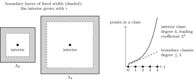

IThe theorem and the architecture of its proof 4
1The result 4
1.1Proof status 6
1.2Earlier work and the method 6
1.3Reading guide 8
1.4Notation and conventions 8
2Definitions 9
2.1The gauge group and the Wilson measure 9
2.2Wilson families and their correlations 10
2.3Local fields 12
2.4Euclidean properties 14
2.5Field spaces and phases 15
2.6Wightman theories 15
2.7The trace and product statements 16
3The main theorem 17
4Strategy of the proof 19
4.1Why the ultraviolet induction closes 19
4.2Tuning, uniqueness and convergence 23
4.3Rotations 24
4.4Phases and reconstruction 25
4.5The trace 25
5The renormalization group 26
5.1Scales and the block map 26
5.2The density and its norms 28
5.3The inductive step 31
5.4Multiscale trajectories 32
5.5Local fields under blocking 34
5.6Uniform bounds and the fixed-volume limit 35
6The continuum limit, stress, phases, trace and products 36
6.1The volume limit and the field calculus 36
6.2Stress and rotations 38
6.3Phases and reconstruction 41
6.4Trace and products 43
7Deduction of the main theorem 46
8A weaker existence statement 47
8.1Hierarchy data and the conditions Q0–Q6 48
8.2A generalized free-field example 49
8.3Conventions for hierarchy data 51
8.4An averaged countertest 52
9Constants and order of choice 52
Index of notation 54
IIProofs 57
10Local polynomial fields 57
10.1Labels, test holonomies and the Taylor map 58
10.2Taylor-normalized sections 59
10.3Small-field bounds 61
10.4Auxiliary equation sections 62
10.5Example: the curvature square 66
11Gauges and block integration 67
11.1The block kernel 68
11.2Free quadratic forms 72
11.3The stationary background and Gaussian coordinates 79
11.4Inverse, vertex and Ward estimates 85
11.5The local large-field energy 93
11.6Sector Gaussian integration 100
12Path actions and the one-loop coupling 112
12.1Curvature coordinates and the path action 112
12.2Fourth-order matching 114
12.3The determinant comparison 119
12.4The one-loop coefficient 122
13Activities and the inductive step 129
13.1The local expansion 132
13.2Local quadratic subtraction 150
13.3Forced fusion, activity bounds and the reset 152
13.4Continuity at fixed volume 158
13.5The Wilson start 159
13.6The specified recursion 161
13.7Weighted analytic estimates 163
14Trajectories, marked fields and ultraviolet convergence 177
14.1Trajectories and tuning 178
14.2Marked fields and volume-uniform estimates 185
14.2.1One marked insertion 185
14.2.2Chessboard seminorms and replicated sources 192
14.2.3Negligible errors and local matching 200
14.2.4Equation identities and coefficient corrections 204
14.2.5Comparison with free fields 207
14.2.6Bounds for lattice differences 217
14.2.7Bounded approximations 220
14.3Full ultraviolet convergence 224
15Infinite volume and field calculus 231
15.1Volume limits 231
15.2Separated cells and negligible errors 233
15.3Quotient fields 234
15.4Euclidean properties 237
15.5Repeated reflected words 238
16Free fields, Ward identities and rotations 239
16.1Free fields 240
16.2Lattice inputs 247
16.3Free comparison and the conserved line 254
16.4Coordinate reflection spaces and spectral estimates 257
16.5Ward identities and rotations 263
17Phases and reconstruction 270
17.1Compression and phases 270
17.2Reconstruction 276
18The trace law and non-free comparisons 284
18.1Trace and spectrum 284
18.2Precise non-free comparisons 301
19Products and contact subtractions 305
19.1Products and nested clusters 310
19.2Contact subtractions 323
References 332
An exact block integral contains interactions on arbitrarily large supports. We express them as a sum of regular activities and a disjoint-support sum of forced activities, the large-field polymer activities. Regular terms are smooth where their supports are healthy; forced terms retain configurations with flagged plaquettes. Their norms serve different purposes: derivatives are required of the first family, whereas the second is estimated uniformly over configurations. The estimates and the exact density identity enter Theorem 5.5; the Wilson representation starts the recursion and supplies the initial curve of Theorem 5.6.
The step has five stages, and the sizes explain why each is needed. Write \(\mathfrak{b}= \hat{\beta}_{m + 1}\); the output regular activities must be bounded by \(\epsilon_m^{\text{reg}} = \hat{\beta}_m^{- 11 / 10}\).
Connected expansion (Lemma 13.5). The block integral is a polymer gas whose elementary factors are \(O (\mathfrak{b}^{- 1 / 2 + o (1)})\). Its logarithm has regular terms of total size \(O (\mathfrak{b}^{- 7 / 16})\), which is too large, and forced terms of size \(O (e^{- r_j \beta'_u t_{m + 1}^2})\).
Linear terms (Lemma 13.6). An incoming regular activity has zero value, gradient and affine Hessian, so after blocking its leading part has scaling weight five: \(\ell_m^{- 5}\) per fine anchor, a contraction \(\ell_m^{- 1}\) per coarse anchor.
Low-order terms (Lemmas 13.7–13.8). Terms with one or two elementary factors are only \(O (\mathfrak{b}^{- 1 / 2})\) individually. Their sum is the logarithm of a local Gaussian integral; after flat subtraction, parity and the classical and one-loop terms of Section 12, it is \(O (\mathfrak{b}^{- 23 / 20})\) up to subpower factors. We localize it by a fourth difference over five reflected tori. Terms with three or more factors are already \(O (\mathfrak{b}^{- 19 / 16})\) up to subpower factors.
Curvature-square subtraction (Section 13.2). The remaining affine Hessians are subtracted locally; lattice symmetry collects them into one coefficient \(\Delta_u\), added to the coupling.
Fusion and reset (Section 13.3). The resulting mask discrepancies vanish on healthy supports and are absorbed into the forced activities, giving the exact density (Lemma 13.13). The bound on \(\Delta_u\) from the subtraction already gives the drift bound; the scalar reset (Lemma 13.14) reads \(\Delta_u\) off at one test configuration, which identifies it from the density and gives its continuity.
Section 13.4 proves continuity at fixed volume, Section 13.5 treats the Wilson initial condition, and Section 13.6 fixes the step on whole curves and proves Theorem 5.5. Section 13.7 proves the analytic estimates used in Section 14 for endpoint tuning and the fixed-volume limit.
Throughout, the group and trace metric are those of Definition 2.1. Scales, flags, path actions and densities are those of Section 5 and Definitions 5.2, 12.1–12.2. At a step \(m + 1 \to m\) put \(j = J_{m + 1}\), \(\Lambda = \Lambda_{L_p D_m}\), \(t = t_m\), \(B = B_m\) and \(\sigma = \sigma_{J_m}\). Set \(h_X (U) =\boldsymbol{1} \{X \cap \text{Flag}_m (U) = \varnothing\}\). Constants may depend on the fixed stage data and, when indicated, on the chosen ratio, but are independent of the volume. Here \(C_j\) is a generic stage constant.
An activity is a local function of the links, attached to a finite support, whose sums make up the effective density. Locality on \(X\) means dependence only on links with both endpoints in \(X\). Write \(\xi_o (y)\) for the centered lift of \(y - o\) to \(\mathbb{Z}^4\). All lattice distances in this section use the maximum norm. Set \(N_R (X) = \{y : \text{dist} (y, X) \leqslant R\}\) and \(N_R (o) = N_R (\{o\})\). A link internal to \(X\) has both endpoints in \(X\). The nonwrapping condition is \(10 \text{dist} (y, o) < L_p D_m\) for every \(y \in X\); it permits local affine tests without crossing a choice of lift.
Definition
Here \((\exp A)_e = \exp (A_e)\). This removes the affine quadratic contribution from the error.
Together with \(E_i (1) = 0\) and the vanishing first derivative, which is automatic by gauge invariance (proof of Lemma 13.10), this says that \(E_i\) has no relevant or marginal part: its local constant and its curvature-square coefficient have been extracted, the analogue of the localization operator of [6].
For forced terms the inventory specifies exactly the flags inside the support. Additional tests distinguish local alternatives with the same support and inventory.
Definition
The address of a regular activity is the pair \((X_i, o_i)\); that of a forced activity is the triple \((Y_i, I_i, \mathcal{E}_i^{\text{extra}})\), and its eligibility indicator is \(\boldsymbol{1}_{\mathcal{E}_i^{\text{elig}}}\).
Three sets attached to the large-field sites, the flags, play different roles. The support \(Y_i\) carries the forced activity. The inventory \(I_i \subset Y_i\) lists the flagged sites that the eligibility event requires in \(Y_i\), exactly those and no others. The complete read support of a factor in the expansion (defined before Lemma 11.14) is the region that factor inspects; polymers are formed through overlaps of complete read supports, and a support \(Y_i\) need not be connected. Deciding the flags at the sites of \(Y_i\) reads plaquettes within distance one of \(Y_i\), so the read regions of two disjoint supports may overlap although the supports do not. For example, let exactly two distant plaquettes have chord above \(t_m\), so that the flags are their vertex sets \(F_1\) and \(F_2\). A selection may use one forced term whose support contains both, with inventory \(F_1 \cup F_2\), or two terms with disjoint supports and inventories \(F_1\) and \(F_2\). Both alternatives occur in the exact-cover sum of Definition 5.2; in each selection every flag is covered exactly once, and no canonical covering is chosen. A term whose support contains \(F_1 \cup F_2\) but whose inventory is \(F_1\) is ineligible at this configuration and vanishes. Forced fusion (Lemma 13.11) groups overlap components together with the logarithmic factors meeting them and recovers every selection uniquely.
We use the ordered derivative seminorm and weighted sums of Definitions 5.3–5.4. Regular sums are bounded at their anchors; forced sums are bounded at every site of their supports, so the factor \(e^{\sigma \text{cov}_B (Y)}\) charges each support for its size. For a function \(f\) on \(Z\) anchored at \(o\), \(\|f\|_{m, Z}\) denotes the seminorm of Definition 5.3 with that support and anchor.
Continuity concerns the coefficients at fixed addresses. Health sets remain fixed as the curve parameter varies.
Definition
Both sums run over all addresses. This is continuity for coupling tuning, with no derivative of a flag indicator.
At fixed volume these sums control the density:
The first inequality sums the regular bounds over anchors, the second the forced bounds over sites, since each forced support is nonempty; the third sum runs over all finite selections. Restricting to disjoint supports and exact coverage preserves the third bound, so the density sums of Definition 5.2 converge. No volume-independent bound on the full density follows.
Fix a compact parameter interval and a continuous input curve \(\rho'_u\) in the sense of Definition 13.3. Its prescribed path satisfies Lemmas 12.3–12.4; its regular and forced families satisfy Definitions 13.1–13.2 and the caps of Definitions 5.3–5.4; and \(\beta'_u \in \mathfrak{B}_{m + 1}\). Write \(\mathcal{H}_u =\mathcal{B}^{(m)}_{\beta'_u} \text{dens} \hspace{0.17em} \rho'_u\), and split the path action as in Definition 12.2. Write \(\textsf{K}_{2, m}^{\text{kin}}\) for \(\textsf{K}_m^{\text{kin}}\) without its cubic and quartic atoms; it is still nonlinear in the links. The coefficient \(\alpha_{N, m}\) is the quadratic coefficient of the determinant comparison in Section 12. It is independent of the curve parameter and the period.
For \(a < b\) define the clover curvature, the clover-leaf field strength of lattice gauge theory, by
The loop starts at \(o\), takes steps \(\varepsilon e_a, \eta e_b, - \varepsilon e_a, - \eta e_b\), and returns to \(o\). Thus each term transforms by the adjoint action at \(o\) and uses links within distance two. For an affine field as in Definition 13.1, differentiating the four link factors gives
| \(\displaystyle \left. \frac{d}{dz} \right|_{z = 0} F^{\text{cl}}_{ab} (e^{zA}, o) = v_{ba} - v_{ab} \hspace{0.17em} .\) | (13.1) |
Each inverse contributes the negative link field; the four orientations have the same signed curl.
Expanding each row square \(\frac{1}{2} |\mathcal{L}^{\text{path}}_{\mathfrak{p}} |^2\) into the products \(\frac{1}{2} r_{\mathfrak{p}i} r_{\mathfrak{p}k} \langle \mathcal{F}_{\mathfrak{p}i}, \mathcal{F}_{\mathfrak{p}k} \rangle\) and adding the direct plaquette terms gives a countable family of local energy terms indexed by \(\lambda\); translations and the \(H_4\) average, with weight \(|H_4 |^{- 1}\), are included in the addresses. Each term has three versions: \(L_{\lambda}\), the actual clipped or threshold-tested term; \(L^{\text{raw}}_{\lambda}\), the same quadratic curvature function without clip or test; and \(L^{\text{cl}}_{\lambda}\), the function \(L^{\text{raw}}_{\lambda}\) with each curvature replaced by the clover curvature of its orientation at the anchor. For a direct term \(L^{\text{raw}}_{\lambda} = c_{\text{dir}} \text{pr} (U_{\square})\) and \(L^{\text{cl}}_{\lambda} = \frac{1}{2} c_{\text{dir}} |F^{\text{cl}}_q (U, o_{\lambda}) |^2\).
Choose \(Z_{\lambda}\) to contain the slot footprints and the radius-\(B\) neighborhood of the anchor needed to decide the relaxed threshold test. Queries outside that neighborhood are automatic once
since chords are at most two. Lemmas 12.3–12.4 give absolute convergence of \(\textsf{K}^{\text{kin}}_m = \sum_{\lambda} L_{\lambda} +\mathcal{A}_m\), where \(\mathcal{A}_m\) is the sum of the cubic and quartic atoms. Define the masked quadratic functional and record the clover identity:
A signed image in these formulas uses the pulled-back anchor, support and clover; the second equality follows from the coefficient identity of Lemma 12.4 and reindexing orientations. On \(Z_{\lambda}\) healthy, \(L_{\lambda} = L^{\text{raw}}_{\lambda}\); without flags, \(\mathcal{Q}_m = \textsf{K}_{2, m}^{\text{kin}}\).
The local integral is expanded before any regular term is normalized. Its elementary factors \(F_a\) are: (i) the remainder of the stationary action; (ii) the variation \(\text{e}^{- [\mathcal{L}_{m + 1} (U) -\mathcal{L}_{m + 1} (U_v)]}\) of the inherited loop action about the stationary configuration \(U_v\); (iii) the determinant and covariance ratios and the Haar Jacobian; (iv) the incoming regular and forced activities; (v) the cutoff remainders of Lemma 11.14, that is, the failures of the fluctuation, chart, tag and inventory tests. Put \(W_a = F_a - 1\), except \(W_a = K_a\) for an incoming forced activity. The support of a factor includes every field, flag and covariance window it reads. We join two factors when their complete read supports, as defined before Lemma 11.14, intersect. A polymer is a finite product of factors whose complete read supports have connected intersection graph; we use only the polymers allowed by Lemma 11.14, which have disjoint incoming forced supports, inventories covered by the corners of the selected fine plaquettes \(A_f (M)\), and the component compatibility there. The selection retains these supports and inventories. A polymer is ordinary if its complete read supports also avoid the output flags.
For an ordinary polymer \(M\) on a healthy output support, its integrated weight and an absolute derivative majorant are
Here \(\nu\) is the single sector Gaussian/Haar law of Lemma 11.14, \(G_M\) majorizes the product and its required ordered derivatives, and \(f_a\) are that lemma's factor bounds. The integer \(s_M\) is the sum of the numbers of radius-\(B\) blocks covering the complete read supports, including retained path lengths in the same units. The function \(P_j\) has subpower growth after the ratio has been fixed. The formula is used only on compatible sectors; their sum retains the exact allocation indicators. Terms whose reads meet an output flag component remain attached to that component and have a nonempty forced inventory. The ordinary connected integrals are taken on the complement, where their read supports are disjoint from the output flags. Components with empty inventory are used in the regular logarithm on their healthy supports.
The tree sums of Sections 13.1–13.3 are instances of one estimate. A support covered by \(n\) radius-\(B\) balls has at most \((2 B + 1)^4 n\) sites; this converts a site bound into an attachment bound.
Lemma
For a support \(Z_{\star}\) with weight \(v_{\star} \geqslant 0\), let \(T_{\star}\) be the sum over finite rooted trees with root \((Z_{\star}, v_{\star})\) and other vertices labelled by the family, repetitions allowed, in which every child support meets its parent's; a tree contributes the product of its weights, and each set of \(k\) children of a vertex the factor \(1 / k\)!. Then \(T_{\star} \leqslant v_{\star} e^{\eta \text{cov}_B (Z_{\star})}\).
Proof. Let \(T^{(h)}\) denote the sum over trees of height at most \(h\). The exponential formula for unordered children gives \(T_{\star}^{(0)} = v_{\star}\) and \(T_{\star}^{(h + 1)} = v_{\star} \exp (\sum_{a : Z_a \cap Z_{\star} \ne \varnothing} T_a^{(h)})\). If \(T_a^{(h)} \leqslant v_a e^{\eta \text{cov}_B (Z_a)}\) for every label, the exponent is at most \(\sum_{x \in Z_{\star}} \sum_{a : x \in Z_a} v_a e^{\eta \text{cov}_B (Z_a)} \leqslant |Z_{\star} | \eta (2 B + 1)^{- 4} \leqslant \eta \text{cov}_B (Z_{\star})\). Induction on \(h\) and monotone convergence prove the bound.\(\Box\)
Every connected family of labels containing a distinguished label has a spanning tree rooted there, so the lemma dominates connected sums of nonnegative majorants. In applications the factor \(e^{\eta \text{cov}_B (Z_a)}\) is absorbed by one spare unit of support exponent.
We now give the connected identity with its initial estimates. The proof of the identity and bounds below depends on the sector inputs of Lemma 11.14, including localization of the inverse and determinant corrections and the retained-mask and cutoff estimates; their outstanding verification leaves the corresponding conclusions conditional in this draft. For a support exponent \(\tau\) let \(\mathcal{E}_{\tau}, \mathcal{K}_{\tau}\) be the sums of Definition 5.4 with \(\sigma\) replaced by \(\tau\). In the rooted clause below, \(W_{\star}\) is a further elementary factor with complete read support \(Z_{\star}\), \(n_{\star} = \text{cov}_B (Z_{\star})\), and integrated majorant \(v_{\star}\), including its support weight and required derivatives; any retained forced suppression of a selected large-field test is kept separately. The other factors have nonnegative majorants \(v_a\) on their complete read supports \(Z_a\), including the reserved support weights. Lowering the support exponents in (d) includes the one in \(v_{\star}\). Let \(\mathcal{R}_{\text{reg}} (W_{\star})\) and \(\mathcal{R}_{\text{for}} (W_{\star})\) be the absolute sums, at exponents \(\sigma + 3\) and \(\sigma + 2\), of the connected terms containing one distinguished occurrence of \(W_{\star}\), counted once. The expansion produces a scalar \(\tau_u^{\text{old}}\), local functions \(f_a^0\) on \(X_a\), regular before flat-value and Hessian subtraction, and forced activities \(k_{i, u}^{\text{con}}\) with exact-cover sum \(\mathcal{F}_u^{\text{con}}\); weighted-continuous means continuous in the weighted norms of Definition 13.3. The stronger regular estimate needed for subtraction is obtained in Lemma 13.8.
Lemma
These exist, with fixed countable addresses, equivariant and weighted-continuous, such that everywhere
with absolutely convergent sums.
\(\mathcal{E}_{\sigma + 3} (f^0) \leqslant C_j \hat{\beta}_{m + 1}^{- 7 / 16}\) and \(\mathcal{K}_{\sigma + 2} (k^{\text{con}}) \leqslant C_j e^{- r_j \beta'_u t_{m + 1}^2}\).
If \((2 B + 1)^4 \sup_x \sum_{a : x \in Z_a} v_a \leqslant \eta\), then \(\max \{\mathcal{R}_{\text{reg}} (W_{\star}), e^{r_j \beta'_u t_{m + 1}^2} \mathcal{R}_{\text{for}} (W_{\star})\} \leqslant v_{\star} e^{\eta n_{\star}}\).
Parts (b) and (c) hold coefficientwise for factors in a coefficient algebra, and with every support exponent lowered by two.
Proof. The block kernel of Definition 5.1 turns the density into a product of elementary factors; Lemma 11.14 integrates their products under one Gaussian law and factorizes disjoint supports, and the local energy lower bound of Lemma 11.12 suppresses the large-field components.
Step 1: polymer gas. Expand finite products first. Fubini's
theorem applies to each term by
Step 2: elementary factors. Put \(\mathfrak{b}= \hat{\beta}_{m
+ 1}\) and \(g = (\beta'_u)^{- 1 / 2}\). For a healthy local chart write
its link logarithm as \(m_Y + gz\); the mean is \(O (t_{m + 1})\) by
Lemma 11.13. The following bounds include the prescribed
finite number of ordered derivatives. A factor \(P_j (\mathfrak{b})\)
below absorbs fixed powers of \(B\) and \(M^{\text{cut}}_{m + 1}\) after
the ratio is fixed; read-count powers remain in \((1 + s_M)^{d_j}\) as
in
For the first row, Taylor's formula after the stationary quadratic part starts with \(\beta'_u (m_Y + gz)^3\); substituting \(m_Y = O (\operatorname{gM}^{\text{cut}}_{m + 1})\) gives the displayed bound. For the determinant, subtract its flat value and the quadratic term already assigned to \(\alpha_{N, m} \mathcal{Q}_m\). The inverse identity bounds the remaining variation by \(P_j (t_{m + 1} + g)\). The covariance and sector mean-equation residuals are exponentially small by Lemma 11.13; their rescaling introduces only the displayed fixed power. The chart density has value one and zero first derivative at zero, giving its quadratic bound. The inherited loop action is quadratic in slot curvatures with weighted coefficient sum at most \(\Lambda_{m + 1}^{\text{loop}}\) by Lemma 12.3; on the chart each slot is \(O (t_{m + 1} + g|z|)\) and moves by \(O (g|z|)\), which gives its row. Incoming regular and forced sums retain their respective bounds. Chart-test failures, fine-plaquette and mismatch failures, and tag or inventory departures are precisely the cutoff remainders of Lemma 11.14.
Lemma 11.14 permits every fixed exponent \(\tau_w > 0\) for the cutoff remainders. Take \(\tau_w = 1 / 2\), so \(\varepsilon_w =\mathfrak{b}^{- 1 / 2}\) and the simultaneous probability bound is \(\varepsilon_w^{2 r} =\mathfrak{b}^{- r}\) for \(r\) distinct cutoff addresses, including the coordinate-choice multiplicity. The linear Chernoff bound there gives each cutoff remainder the exponent \(c_j (t_{m + 1} / g) / B^4\) for some \(c_j > 0\). Since \(t_{m + 1} / g \geqslant M^{\text{cut}}_{m + 1} / \sqrt{2}\),
The fixed amplitudes \(M_w\) enter \(P_j\). All rows of
Step 3: large-field components. Large-field components are the connected components of the neighbourhoods of the selected large-field tests in the allocation sector of Lemma 11.12, as defined before Lemma 11.14. Their selections \(A = (A_f, A_n, A_c)\) consist of the selected fine plaquettes, mismatch edges and coarse flags; each retains \(\exp (- \kappa_B \beta'_u t_{m + 1}^2 |A|)\) before integration, \(\kappa_B\) being the constant of Lemma 11.12. Fix the retained exponent \(0 < \kappa'_B < \kappa_B\) in the large-field component bound of Lemma 11.14, and then choose \(0 < r_j < \kappa'_B\). When \(A_c \ne \varnothing\), keep all reads meeting this component in its local factor and apply that bound. Old measurable factors use their supremum envelopes, while the Gaussian variables are integrated. The frozen Haar integrals are probability integrals. After adjoining every large-field component met by the reads, \(A_c = \varnothing\) means that these reads avoid output flags. In this case the selected-test clause of Lemma 11.14 retains \(\prod_i a_i \leqslant e^{- \kappa'_B \beta'_u t_{m + 1}^2 |A|}\) through the required derivative order; apply its ordinary polymer bound to the remaining factors. With \(F_A\) denoting this component product, its integrable majorant satisfies
Here \(s_A\) counts its radius-\(B\) blocks, and \(\kappa'_B\) was fixed
before \(r_j\). The product contains the other attached factors' bounds.
Its covariance scores and residual quadratic exponentials are estimated
by square completion under the common Gaussian law there. The
surrounding ordinary factors have supports disjoint from the output
flags and use that same law. The read-count polynomial uses the unused
support exponent: for every fixed \(\delta > 0\), \((1 + s_A)^{d_j}
\leqslant C_{j, \delta} e^{\delta s_A}\). Choose \(\delta\) within that
reserve, as for
Step 4: tree sums. The coupling threshold makes \((2 B + 1)^4 \sup_x \sum_{a : x \in Z_a} v_a\) at most \(\eta\), with \(\eta\) smaller than the reserved exponent, which absorbs the factors \(e^{\eta \text{cov}_B (Z_a)}\). Lemma 13.4 then bounds the rooted sums by \(v_a e^{\eta n_a}\). This proves absolute summability, including all sectors and all differentiated terms. For a distinguished factor \(W_{\star}\), the same lemma with root \((Z_{\star}, v_{\star})\) gives \(v_{\star} e^{\eta n_{\star}}\). Rooting there counts each distinguished occurrence once. A forced component keeps \(\exp (- r_j \beta'_u t_{m + 1}^2)\) in this sum, proving both forced bounds. For coefficient-valued factors take the norms of the coefficient algebra before integration; they are subadditive and submultiplicative, so every product and sum reduces to the same nonnegative tree calculation. Finite-product identities hold coefficient by coefficient, and absolute convergence permits passage to their limits. This proves the coefficientwise assertions without changing the health or inventory tests. Increasing the fine support exponent before choosing the ratio leaves the output exponents \(\sigma + 3\) and \(\sigma + 2\). The same tree calculation applies with two subtracted from every support exponent, including the exponent in \(v_{\star}\): covering subadditivity still applies and the attachment sum decreases. This proves the bounds with the reduced weights.
Step 5: logarithm. There are two connectivity operations.
First, elementary factors whose complete read supports intersect are
integrated together; their connected products are the polymers \(M\),
with weights \(z_M\). Second, the hard-core gas of these polymers is
expanded logarithmically; its connected graphs, the clusters, have
polymers as vertices and support overlaps as edges. In
The graph in this formula has vertex set \(\{1, \ldots, n\}\), and the one-vertex coefficient is one. Apply [33, Theorem 1, equations (3)–(4)] to the counting measure with masses \(z_M\) and interaction \(\zeta (M, M') = -\boldsymbol{1}_{Z_M \cap Z_{M'} \ne \varnothing}\). Its hypotheses are \(|1 + \zeta | \leqslant 1\), finite total variation, finite exponential mass, and
The rooted estimate just proved verifies the last condition. At fixed
volume the site sum gives finite total exponential mass. Equation
Step 6: continuity and covariance. For two inputs at fixed addresses, telescope each product with one difference factor. Activity differences use their own difference norms under Lemma 11.14. For a coupling change, hold physical coordinates fixed and compare the Gaussian densities explicitly. On \(d\) active coordinates with fixed mean and positive precision \(\textsf{A}\), put \(Q (a) = \langle a - m, \textsf{A} (a - m) \rangle / 2\). The normalized laws satisfy
Its derivative in \(\beta_2\) is the same ratio times \(d / (2 \beta_2) - Q (a)\). On a small relative coupling interval its absolute value is dominated by a polynomial times a Gaussian exponential with precision strictly below that of the base law. Square completion bounds its integral. Mean and precision changes are treated by the inverse difference identity and the Schur bounds of Lemma 11.13; their density derivatives are again polynomial Gaussian scores. No old measurable factor is differentiated in this comparison. The tree bound with the same attachment margin controls the weighted discrepancy by a constant times the input activity and coupling discrepancies; this constant may depend on the fixed volume. Continuity holds locally and, by a finite covering of the compact interval, on fixed addresses throughout. Translation and signed permutations transport complete read supports, factors and sectors; their finite average gives equivariance.\(\Box\)
One sector. On a healthy chart the link logarithm is \(m_Y +
gz\) with \(m_Y = O (t_{m + 1}) = O (\operatorname{gM}^{\text{cut}}_{m +
1})\), since \(\beta'_u \leqslant 2 \hat{\beta}_{m + 1}\). After the
stationary quadratic part, the stationary-action remainder starts with
\(\beta'_u (m_Y + gz)^3\), and \(\beta'_u g^2 = 1\) makes this \(O (g
(M^{\text{cut}}_{m + 1} + |z|)^3)\). Gaussian moments of \(z\) and \(g
\leqslant \sqrt{2} \hspace{0.17em} \mathfrak{b}^{- 1 / 2}\) give the
first row of
One law for the whole polymer. The factors of a polymer read common Gaussian coordinates, so the integral of their product is not the product of their integrals. Lemma 11.14(i) bounds it by \(P_j (\mathfrak{b}) (1 + s_M)^{d_j} \prod_a f_a\) in a single estimate under \(\nu\); the square completions for covariance scores and the Cauchy–Schwarz step for cutoff remainders take place inside it (Step 3 above). No product in the expansion is bounded by multiplying separate integral bounds.
Reserve and supports. Raising the threshold until \(P'_j (\mathfrak{b}) \leqslant \mathfrak{b}^{1 / 16}\) makes every factor majorant at most \(\mathfrak{b}^{- 7 / 16}\); the exponent \(1 / 16\) absorbs the fixed powers of \(B\) and \(M^{\text{cut}}_{m + 1}\). The read-count polynomial obeys \((1 + s_M)^{d_j} \leqslant C_{j, \eta} e^{\eta s_M}\) and is absorbed by a unit of support exponent that the output norm does not use. The threshold then makes the attachment parameter of Lemma 13.4 smaller than \(\eta\), and the tree sums give regular terms of size \(\mathfrak{b}^{- 7 / 16}\) and forced terms of size \(e^{- r_j \beta'_u t_{m + 1}^2}\) (Lemma 13.5(b)).
Three factors. The size \(\mathfrak{b}^{- 7 / 16}\) is far above \(\epsilon^{\text{reg}}_m\). Multiply every ordinary factor majorant by \(\mathfrak{h}=\mathfrak{b}^{3 / 8}\). The attachment parameter becomes \(\mathfrak{h}\mathfrak{b}^{- 7 / 16} =\mathfrak{b}^{- 1 / 16}\), still small, so the weighted sums converge, with total a subpower factor times \(\mathfrak{h}\mathfrak{b}^{- 7 / 16}\). A term with at least three factors carries at least \(\mathfrak{h}^3\) in this sum, and restoring the weights gives
the reserve \(19 / 16 - 23 / 20 = 3 / 80\) absorbing \(P_j\). Since \(\hat{\beta}_{m + 1} \geqslant \hat{\beta}_m\), this is at most \(\hat{\beta}_m^{- 1 / 20} \epsilon^{\text{reg}}_m\).
The branches. Terms with one or two factors lack this gain. The regular part of the connected logarithm is divided as follows; the proof of Lemma 13.8 spends at most \(15 \epsilon^{\text{pre}}_m / 16\) on the regular rows in total.
terms
bound
proof
linear in an incoming regular activity
\((V_j / \ell_m + \omega^{\text{inh}}_{j, \ell_m})
\epsilon^{\text{reg}}_{m + 1}\)
Lemma 13.6
\(\geqslant 3\) factors, large-field overlap, large
support
\(\mathfrak{b}^{- 23 / 20}\)
incoming regular factor and a further factor
\(P_j \epsilon^{\text{reg}}_{m + 1} \mathfrak{b}^{- 1 /
2}\)
Lemma 13.5(c)
paths longer than \(B\)
\(\mathfrak{b}^{- 7 / 16} e^{- w^{\text{path}}_{J_m} B
/ 4}\)
Lemma 12.3
selected low-order terms, localized
\(P_j (\mathfrak{b}^{- 23 / 20} +
\varepsilon_{\text{tr}})\)
Lemma 13.7
unselected low-order terms
\(\varepsilon_{\text{tr}}\)
Lemma 13.8
Forced components. Their gain is energy, spent in stages along
The difference \(\kappa_B - \kappa'_B\) absorbs, per selected test, the annular affine errors, the logarithmic corrections of chart densities, tags, determinants and frozen coordinates, and the derivative losses (Steps 7–8 of the proof of Lemma 11.14). The difference \(\kappa'_B - r_j\) absorbs the local multiplicity of the selected tests (Step 3 above), and \(r_j - r'_j\) the constants of collecting the corrections \(L_x\) into the forced sum, which leaves \(\kappa_j^{\text{pre}}\) (Lemma 13.8). In Lemma 13.12 half of the remaining exponent keeps the forced weights small in the attachment parameter of Lemma 13.11, and the factor \(e^{- \kappa_{\text{fus}}}\), \(\kappa_{\text{fus}} = \kappa_j^{\text{pre}} (M^{\text{cut}}_{m + 1})^2 / 2\), is retained. The support exponent absorbs the read-count polynomials \((1 + s_A)^{d_j}\); the energy exponent is not used for them.
Two kinds of gain. A selected large-field test gains deterministically, by its energy. A cutoff remainder gains probabilistically: it vanishes unless a Gaussian coordinate within \(2 B\) of its address is large. Lemma 11.14(iv) bounds the probability of \(r\) distinct such events by \(\varepsilon_w^{2 r}\), and Cauchy–Schwarz under the same law leaves \(\varepsilon_w^r\) after the other factors are estimated: one factor \(\varepsilon_w =\mathfrak{b}^{- 1 / 2}\) for each distinct address, also when addresses share coordinates. Each address is counted once, and the selection retains the incoming forced supports and inventories.
Closure. The three linear operations of Sections 13.2–13.3 contribute at most \(C^0_j \epsilon^{\text{pre}}_m\), plus a term \(C^1_j | \alpha_{N, m} | t_m^3\) made small by the threshold. With \(\epsilon^{\text{pre}}_m = \theta c_j \epsilon^{\text{reg}}_m\), Lemma 13.12 gives \(\mathcal{E}_m \leqslant \epsilon^{\text{reg}}_m / 1024\) and \(\mathcal{K}_m \leqslant \epsilon^{\text{for}}_m / 1024\), inside the input bounds required at level \(m\). Every constant depends only on the stage and the ratio, and every threshold is independent of \(N\), \(p\) and the period, so the same construction applies at the next step (Lemma 13.17).
The terms linear in an incoming regular activity must be treated separately from products of small factors. Their supports can be large, so they are not replaced by auxiliary tori. The function \(E_i\) and its derivative norm in this paragraph are at level \(m + 1\). For such an address \(i\), let \(T_i\) be its contribution to the negative connected logarithm. The local Gaussian substitution of Lemma 11.14, restricted to the windows incident to \(X_i\), reconstructs a fine configuration \(U_i^0 (V, z)\). With the same inner chart protector \(\Gamma_i\), define
Here \(\mathcal{T}_i\) is the finite set of rooted frames and tags in that local substitution. The operator \(\text{Ext}_{Y_i}\) extends the function from the healthy domain by its local Borel representative; on that domain it changes no value. The coarse support \(Y_i\) contains the projected fine support and every incident window. This principal Gaussian average retains the incoming function itself.
Domain verification still required. The incoming regular norm controls \(E_i\) on its healthy fine support. The proof must show that \(\Gamma_{i, \theta}\) and the terms obtained when differentiating the integral evaluate \(E_i\) only there, including all fine flags read by \(X_i\) and the frozen-link contributions. An active logarithm-chart cutoff alone does not state this implication. Alternatively, a masked or fixed off-health representative must be used consistently, with the principal Taylor estimate and the discarded-tail comparison proved for that choice. Extending the coarse output after integration does not control values of \(E_i\) outside its fine healthy domain.
Lemma 13.6 is the contraction estimate for the linear part of the step. An incoming regular activity has zero value, zero gradient (by gauge invariance) and zero affine Hessian (Definition 13.1). Its Gaussian average \(P_i\) at fixed coarse field therefore sees only background terms of scaling weight at least five, each costing \(\ell_m^{- 5}\); summing over the \(\ell_m^4\) fine anchors above a coarse anchor gives \(V_j / \ell_m\). The remainder \(R_i\), the difference between the true local integral and this Gaussian average, is smaller by a factor \(\hat{\beta}_m^{- 1 / 2 + o (1)}\).
Lemma
where \(V_j\) is fixed before the ratio and \(\omega_{j, \ell}^{\text{inh}}\) has upper rate \(- 1 / 2\). The identity \(T_i = P_i + R_i\) and the corresponding weighted comparisons hold on the entire input curve.
Proof. The principal average is estimated by a weight count in the radial gauge; the remainder by the Gaussian comparison of Lemma 11.14 and the unrefined bound of Lemma 13.5. For the principal average use the same normalized directions as in the incoming norm. The linear background lifts a unit coarse curl to fine curvature of size \(O (\ell_m^{- 2})\). Replace the background on \(X_i\) by its affine part at the anchor. In the Taylor formula for \(E_i\) the constant vanishes by Definition 13.1. The first derivative also vanishes: invariance under constant gauge transformations makes its coefficient on each link an \(\text{Ad} (G)\)-invariant vector of \(\mathfrak{g}\), which is zero since \(\mathfrak{g}\) is simple and nonabelian (Definition 2.1). Its Hessian on two such affine fields vanishes by Definition 13.1. Since \(E_i\) is gauge invariant, evaluate it in the radial gauge at its fine anchor; at fine distance \(\rho \leqslant \ell_m\) the lifted field is then at most \(C_j \ell_m^{- 2} (t_m / t_{m + 1})\) times a permitted fine direction, using \(\varpi_{J_{m + 1}} \geqslant \varpi_{J_m} \geqslant 2\). In the normalized curvature directions, the linear prediction \(\textsf{P}\) and its affine approximation \(\textsf{P}_{\text{aff}}\) satisfy
Lemma 11.6 gives \(\| \nabla_f^r W_0 \|_{\infty \to \infty} \leqslant C_j \ell_m^{- 1 - r}\) for \(0 \leqslant r \leqslant 2\). Taking its curl and one further fine difference gives the two bounds above, with constants fixed before the ratio. For supports with \(d_i^3 < \ell_m\) the weight count below shows that every surviving term carries \(\ell_m^{- 5}\); larger supports are treated without affine subtraction.
For every support extending beyond the radius \(\ell_m\), use the incoming covering number \(d_i = \text{cov}_{B_{m + 1}} (X_i)\). Split at \(d_i^3 < \ell_m\). In this class \(3 d_i \leqslant \ell_m\); together with \(B_{m + 1} \leqslant 2 B_m\), this bounds the inspected fine radius by \(6 (1 + B_m) \ell_m\). The support is nonwrapping because the coarse side is at least \(100 (1 + B_m)\). Perform the radial Taylor expansion on this whole support. In the incoming weighted direction norm, each differentiated lifted potential decomposes into a constant part, an affine part and a remainder with respective bounds
Here \(C\) is bounded by a stage constant plus the normalized nonlinear and fluctuation errors. After the ratio is fixed these errors are made at most one by the entry choice: their bounds are fixed powers of \(\ell_m, B_m\) times \(t_{m + 1} + g / t_{m + 1}\), which tends to zero. The spatial weights are retained in this decomposition, using \(\varpi_{J_{m + 1}} \geqslant \varpi_{J_m} \geqslant 2\) from item 4 of Table 3.
Assign weights one, two and three to the three parts. In the local radial-gauge expansion, a site gauge removes the weight-one part of the potential and produces terms of weight at least two; commutators of constant parts first occur at weight two. Thus the first possible curvature has weight two. The terms through weight four are therefore a constant, linear terms in curvature and its spatial derivatives, and a quadratic curvature term. The first is zero by flat normalization, the second is zero by constant colour invariance, and the last is zero by the affine Hessian condition. Equivalently, multilinearity after the three-part decomposition cancels every selection of total weight at most four. A selection of larger weight has at least five inverse powers of \(\ell_m\). Taylor's integral formula along the healthy radial segment gives the same gain at the evaluation field: integrate the next derivative from the flat field, repeating up to the available order \(\mathfrak{q}_{J_m} \geqslant 6\). The ordered chain rule has only stage-dependent many placements. The common Gaussian majorant of Lemma 11.14 bounds their moments.
For the complementary class \(d_i^3 \geqslant \ell_m\), including winding supports, apply the derivative bound without an affine subtraction. Its direction and read-count losses are polynomial in \(1 + d_i\). Both cases are expressed by
Indeed \(\ell^5 \leqslant d^{15}\) in the second case. After the entry choice absorbs factors polynomial in \(B_m\), if \(a_i\) is an incoming derivative majorant, the integrated principal bound is at most \(C_j a_i \delta_{\ell_m} (d_i) (1 + d_i)^{q_j}\), for a fixed integer \(q_j\); the polynomial comes from the ordered chain rule and the Gaussian moments just described.
For support compression, fix an integer \(r\) with \(Y_i \subset N_{rB_m} (\text{parent} (X_i))\) and put \(T_r = (2 r + 13)^4\). Choose the ratio to satisfy
Together with \(B_{m + 1} \leqslant 2 B_m\), this leaves half the incoming exponent:
The remaining half bounds \((1 + d_i)^{q_j + 15}\), since \(\sup_{d \geqslant 0} (1 + d)^{q_j + 15} e^{- \sigma_{J_{m + 1}} d / 2} < \infty\). There are \(\ell_m^4\) fine anchors above a coarse anchor. Multiplying their count by the per-address factor \(\ell_m^{- 5}\) proves the bound \(V_j / \ell_m\), with \(V_j\) fixed before the ratio.
For \(\text{cov}_{B_m} (Y_i) \leqslant B_m\), compare the actual local integral with this principal Gaussian average before integrating. Subtract their means, covariances and transported kernels using the inverse difference identity, and telescope the remaining factor product with one marked difference. The inverse difference identity \(C^{- 1} - \tilde{C}^{- 1} = C^{- 1} (\tilde{C} - C) \tilde{C}^{- 1}\) puts a reconstruction difference in one factor. Taylor's formula for the link exponential makes that factor at most \(P_j (\mathfrak{b}) (t_{m + 1} + g)\) in each of the requested normalized derivatives; stationarity and window residuals contribute \(P_j (\mathfrak{b}) g^{- c_j} e^{- c'_j B}\). Consequently their common bound is
A second occurrence of the incoming activity has bound \(C_j (\epsilon_{m + 1}^{\text{reg}})^2\), which is also bounded by an upper-rate-\(- 1 / 2\) factor times \(\epsilon_{m + 1}^{\text{reg}}\). In every term of the difference, one of these factors is retained before the common Gaussian majorant is applied. Lemma 11.14 bounds its remaining moments by \(P_j (\mathfrak{b}) (1 + s_M)^{d_j}\), where \(P_j\) has upper rate zero after the ratio is fixed and \(s_M\) is the block count defined above. Summing with the unused incoming support exponent gives a function \(\omega_{j, \ell}^{\text{inh}}\) of rate \(- 1 / 2\). This proves the remainder estimate in the weighted norm. For the remaining supports use the unrefined bound for \(T_i\) from Lemma 13.5 and the same Gaussian majorant for \(P_i\). Support compression implies that the incoming covering number is at least \(cB_m - C_j\). Retaining a further fixed part of its exponent gives an extra \(e^{- cB_m}\) in the weighted sum, for some \(c > 0\) fixed before the coupling threshold. Since \(B_m \geqslant (\log \hat{\beta}_m)^2\), this factor, times any fixed polynomial in \(B_m\), is bounded by \(\hat{\beta}_m^{- 1 / 2}\) after the threshold is raised. This supplies the stated remainder bound on large supports.
Local Gaussian marginals read only \(Y_i\). A gauge transformation acts orthogonally on their colour coordinates and leaves \(\Gamma_i\) invariant; changing Gaussian variables proves gauge invariance of \(P_i\). The frame average transports the support and anchor under lattice symmetries. The local extension preserves these identities, measurability and the healthy derivatives. The same properties hold for \(R_i\) by subtraction. For a parameter difference use that incoming difference in the displayed integral and in the marked comparison. The covariance score and protected-coordinate change are those of Lemma 11.14, so the same weighted estimates give continuity at fixed addresses. Finally choose the ratio so \(V_j / \ell_m\) is less than the prescribed pre-ratio fraction, and then the threshold so \(\omega_{j, \ell_m}^{\text{inh}}\) is less than that fraction.\(\Box\)
The bound \(\mathfrak{b}^{- 7 / 16}\) of Lemma 13.5 does
not fit \(\epsilon_m^{\text{reg}} = \hat{\beta}_m^{- 11 / 10}\). The
obstruction comes from connected terms with one or two elementary
factors, each of size \(\mathfrak{b}^{- 1 / 2}\). They improve only
through cancellations in their sum, which is the logarithm of a local
Gaussian integral: the lone cubic term vanishes by parity, the quartic
terms belong to the classical action and the quadratic terms to the
one-loop action. An estimate of each separate local term would miss
these cancellations. We therefore evaluate the finite sum on small
auxiliary tori, where the logarithm can be expanded directly, and
recover a local density from the auxiliary sums. On the torus
\(\Lambda_i\) of side \(2 (w + i)\) put \(h_i = w + i\) and let \(\phi_i
(y)\) have components \(\min \{t_a, 2 h_i - t_a \}\), where \(0
\leqslant t_a < 2 h_i\) represents \(y_a\). The configuration \(V_{i,
z}\) is the pullback of \(V\) on \(z + [0, h_i]^4\) by this fold, with
link orientations reversed where necessary. In the reindexed sum,
evaluate the local formula at \(V_{i, x - \phi_i (y)}\), so that \(y\)
maps to \(x\). The points of \(\Lambda_i\) fall into classes according
to their distances from the reflection faces. When the configuration is
healthy near \(x\), the summand is the same on each class for every
\(i\), and the number of points in a class is a polynomial in \(i\) of
degree at most four; only the interior classes have degree four, with
combined leading coefficient \(2^4\) (Figure 14). The
fourth difference with the weights \(\lambda_i\) in
The discrepancy of the health masks is supported near flags and will be included in the forced activities.
 |
Figure 14. The five reflected tori \(\Lambda_i\) of Lemma 13.7, of sides \(2 (w + i)\), drawn for \(i = 0\) and \(i = 4\). A point \(y\) is classified by its local fold slopes and distances, through the read radius \(R\), from reflection faces; on healthy \(N_{2 \bar{w}} (x)\), the shifted configurations \(V_{i, x - \phi_i (y)}\) give the same local formula within each class. Boundary classes have multiplicity of degree at most three in \(i\); the combined interior multiplicity has degree four and leading coefficient \(2^4\). The fourth difference cancels the boundary classes and retains the interior contribution. The tori are auxiliary domains, and the cancellation takes place in the sum, not term by term. |
Write \(f_a^0\) for a regular summand of the negative logarithm in
| \(\displaystyle \lambda_i = \frac{(- 1)^i \binom{4}{i}}{2^4 \hspace{0.17em} 4!}, \qquad G_x (V) = \sum_{i = 0}^4 \lambda_i \sum_{y \in \Lambda_i} F^{(i)}_y (V_{i, x}) \hspace{0.17em} .\) | (13.6) |
Here \(F^{(i)}\) is the same finite local formula on the auxiliary torus, with its value at \(1\) subtracted at each site. The mask discrepancy and the constant of the redistribution are
The shift is the folded position \(\phi_i (y)\), not a torus representative.
For the estimates below put \(\mathfrak{b}= \hat{\beta}_{m + 1}\); \(P_j\) has subpower growth.
Lemma
Each \(L_x\) reads only links and flags in \(N_{2 \bar{w}} (x)\) and vanishes when that set is healthy, and
Proof. The identity is a rearrangement; the
vanishing of \(L_x\) is the fourth-difference cancellation; the bound on
\(G_x\) comes from the auxiliary logarithm, estimated with the classical
and one-loop subtractions of Section 12. For each \(i, y\),
translation by \(\phi_i (y)\) is a bijection of the physical torus.
Summing
Use the polynomial period requirement in item 7 of Table 3, in addition to \(100 (B + 1) \leqslant L_p D_m\). Write \(n = L_p D_m\). Subject to the stated stage-dependent bound on the actual read radius, \(\bar{w} = 4 R + 100 (1 + B) + 5\) is bounded by a stage multiple \(\bar{a} B / 2\). The chosen stage has integers \(v_j^{\text{per}}, h_j^{\text{per}}\) with \(v_j^{\text{per}} \geqslant \bar{a}\), \(h_j^{\text{per}} \geqslant 1\) and
These are the minimum-period choices made after the ratios. Since \(B \geqslant 1\),
The reflection cubes, whose side is at most \(2 (w + 4) < 2 \bar{w}\), therefore embed, as does every radius-\(R\) read set. The larger health set \(N_{2 \bar{w}} (x)\) is a set on the original torus and need not embed; the argument uses only its containment of the queried links and flags.
For the local comparison, suppose that the field is healthy on the radius-\(R\) neighbourhood. Translate its cube to \([0, 2 R]^4\). On integer representatives \(0 \leqslant k < n\), fold each coordinate by \(q (k) = k\) for \(k \leqslant 2 R\), \(q (k) = 4 R - k\) for \(2 R < k \leqslant 4 R\), and \(q (k) = 0\) thereafter. Pull back links along this map, reversing them on decreasing edges and setting them to the identity on collapsed edges. A plaquette becomes a plaquette of the original cube, with possible reversal and conjugation, or has identity holonomy. The field is therefore globally healthy and agrees with the original field on the cube. The bound \(4 R < n\) permits the construction without a divisibility assumption on \(n\). Locality then permits this replacement when comparing the common local formulas on different periods.
We verify the vanishing of \(L_x\) on a healthy \(N_{2 \bar{w}} (x)\).
The complete read supports then lie in that set and every mask in
Classification of the terms. Here are the quantitative estimates on the sum before this localization. Put \(\mathfrak{b}= \hat{\beta}_{m + 1}\) and \(\mathfrak{h}=\mathfrak{b}^{3 / 8}\). In the convergent connected sums multiply the majorant of each ordinary elementary factor by \(\mathfrak{h}\). The rooted attachment parameter still tends to zero, since \(\mathfrak{h}\mathfrak{b}^{- 7 / 16} =\mathfrak{b}^{- 1 / 16}\). A term with at least three such factors across its polymers gains \(\mathfrak{h}^{- 3}\) upon restoring its original weights. A term with a retained large-field overlap has the same gain because its suppression is at least \(\mathfrak{h}^{- 3}\). The sum after multiplication has size at most a subpower factor times \(\mathfrak{h}\mathfrak{b}^{- 7 / 16}\). Thus the terms in these two classes have bound
| \(\displaystyle P_j (\mathfrak{b}) \mathfrak{h}^{- 3} (\mathfrak{h}\mathfrak{b}^{- 7 / 16}) = P_j (\mathfrak{b}) \mathfrak{b}^{- 19 / 16} \leqslant \mathfrak{b}^{- 23 / 20}\) | (13.8) |
after the coupling threshold is raised. The reserve is \(19 / 16 - 23 / 20 = 3 / 80\). This estimate also bounds fixed ordered derivatives: their placement polynomial was included before the rooted sum.
The connected sum separates into three parts. First retain the inherited
terms using Lemma 13.6; their principal sum is made smaller
than a prescribed multiple of \(\epsilon^{\text{pre}}_m\) by choosing
the ratio, and their comparison remainder by raising the threshold.
Among all other connected terms retain also those whose total support
size exceeds the low-order radius: their support decay is at most
\(\mathfrak{h}^{- 3}\) after the threshold is raised, so the estimate in
The auxiliary logarithm. For the finite sum use the stationary integral on each \(\Lambda_i\). Their sides \(2 (w + i)\) satisfy \(2 (w + i) \geqslant 100 (B + 1)\). The entry choice \(B \geqslant j + 4\) also gives \(\ell_m \hspace{0.17em} 2 (w + i) \geqslant 100 ((j + 3) \ell_m + 1)\) for their fine periods. Thus the coarse-period form of Lemmas 11.12–11.14 applies, without requiring these auxiliary periods to belong to the chosen physical-volume sequence. Subtract its flat value and the classical cubic, quartic and quadratic one-loop terms of Lemmas 12.6–12.9. Differentiation of its logarithm gives connected expectations under the common Gaussian law. For the terms not involving incoming errors, write the normalized local integral as \(\mathbb{E} \exp (V_3 + V_4 + V_{\geqslant 5})\), after the stationary action and its Gaussian determinant have been extracted. The subscripts refer to the Taylor degree in the link chart. Gaussian parity removes a lone odd cubic term. The fourth-order stationary terms are already in the classical path action, and the field-dependent quadratic part of the determinant is already in \(\alpha \mathcal{Q}_m\) and the quadratic loop atoms. Subtracting the value at \(1\) removes the remaining vacuum terms. Expanding \(\log \mathbb{E}e^V\) through two factors gives \(\mathbb{E}V + \frac{1}{2} (\mathbb{E}V^2 - (\mathbb{E}V)^2)\); its remaining terms have at least three factors. In normalized fluctuation coordinates each nonquadratic factor starts at order \(\mathfrak{b}^{- 1 / 2}\). The common Gaussian majorant bounds the last terms by \(P_j (\mathfrak{b}) \mathfrak{b}^{- 3 / 2}\). In the one- and two-factor terms that remain after the stated cancellations, Taylor's integral remainder and the healthy field bound give
Every radius and chart loss is included in the subpower factor. Each of the four power terms has exponent at most \(- 3 / 2\) before that factor; the path exponential decreases faster than any fixed power. The quadratic subtraction uses the infinite-volume path coefficients, whereas the auxiliary logarithm uses the actual finite stationary branch. The finite-period recording paragraph compares precisely these finite and periodized inputs. For \(n_i = 2 (w + i)\) write its ordered-derivative error as
For the chart on the reflected configurations, choose paths from the origin in increasing coordinate order and gauge each bond by the paths to its endpoints. Commute a bond past the higher-coordinate path segments using at most \(3 (n_i - 1)\) plaquette interchanges. A nonwrapping bond then cancels; for a wrapping bond the remaining coordinate cycle is the identity because the reflected extension traverses its links and then their reverses. Thus the gauge-fixed link chord is \(O (n_i t_m)\). Reflected perturbations retain the retracing property. Evaluate the exact gauge-invariant auxiliary functional and path subtraction in this smoothly chosen gauge before taking their flat Taylor expansions; the isolated quadratic expression in logarithms need not itself be invariant under a finite gauge change. Products of \(O (n_i)\) links and the logarithm on a fixed ball around the identity have fixed-order derivatives bounded by a polynomial in \(n_i\) and \(B\). This construction concerns the auxiliary reflected configurations, not arbitrary healthy fields on a torus.
Here \(P_{j, \ell_m}\) is a fixed polynomial for the ordered link
derivatives and logarithmic-coordinate chain rules through the norm's
prescribed order. The \(n_i^4\) already bounds the whole torus quadratic
form; no further site-count factor is applied to this error. Its flat
value is zero, so centering leaves the quadratic difference unchanged.
Differences between the nonlinear path representatives and their
quadratic Taylor terms belong instead to the higher Taylor remainder
displayed above. The comparison depends on the common analytic strip and
its integrable bounds in the finite-period recording
paragraph; it also requires the reflected healthy torus to admit the
coordinate charts and derivative bounds used for those chain rules. Both
points remain under verification. At the fixed ratio, the stated bound
on \(n_i\) makes \(\mathfrak{e}_i\) smaller than any prescribed inverse
power of \(\mathfrak{b}\). Terms involving incoming activities are not
low-order; apart from the inherited terms they obey
| \(\displaystyle C_j \mathfrak{b}^{- 23 / 20} +\mathfrak{e}_i + 2 | \Lambda_i | \{C_j \mathfrak{b}^{- 23 / 20} + \varepsilon_{\text{tr}} \} \hspace{0.17em} .\) | (13.9) |
Here \(\varepsilon_{\text{tr}} > 0\) is the chosen truncation error. The first term is the centered local integral, \(\mathfrak{e}_i\) is the finite-period quadratic mismatch, and the two volume terms bound the omitted regular sum at the field and at \(1\). Approaching a boundary point of the healthy domain by radial contraction preserves these estimates, so they hold on the closed domain used in Definition 5.3.
A direction of that definition, restricted to \(N_{\bar{w}} (x)\) and
reflected, is bounded by \(2 t (1 + \bar{w})^{\varpi_{J_m}}\). Rescaling
each of at most \(\mathfrak{q}_{J_m}\) directions in
All the factors outside the negative powers are fixed powers of \(1 +
B\). Also \(\text{cov}_B (N_{\bar{w}} (x))\) is bounded by a stage
constant. The regular bound divided by \(\epsilon_m^{\text{reg}}\) tends
to zero, since \(23 / 20 > 11 / 10\). Finally,
To specify the small coefficient, let \(C_j^{\text{sub}}\), \(C_j^{\text{low}}\) and \(C_j^{\text{high}}\) be the operator bounds for local subtraction, low path replacement and the part of high path replacement proportional to \(\epsilon^{\text{pre}}_m\). These are the three linear operations in the following subsections; they are fixed from the output derivative norm and path bounds. Put \(C_j^0 = C_j^{\text{sub}} + C_j^{\text{low}} + C_j^{\text{high}}\). These constants use only derivative orders, direction powers, support exponents, and the output path bounds. For a prescribed \(0 < \theta \leqslant 1\), choose before the ratios
The quantity \(\epsilon^{\text{pre}}_m\) depends on \(m\) through
\(\epsilon_m^{\text{reg}}\). The next assertion concerns the very same
block integral and the masks of
Lemma
with \(\kappa_j^{\text{pre}} > 0\) fixed after the ratio. Restricting the interval preserves all this.
Proof. The connected expansion of Lemma 13.5
supplies the terms, Lemma 13.6 and the classification in
the proof of Lemma 13.7 bound all but the low-order ones,
and Lemma 13.7 localizes the latter; the choices below
split \(\epsilon^{\text{pre}}_m\) among them. First choose the ratio so
that the inherited principal terms of Lemma 13.6 use at
most \(\epsilon^{\text{pre}}_m / 32\), and then raise the threshold so
that their comparison remainders use at most \(\epsilon^{\text{pre}}_m /
32\). Bound the terms retained in
Next fix the truncation index. The low-order tail reads only the
prescribed path, the coupling and the incoming addresses. For each
coupling in \(\mathfrak{B}_{m + 1}\) summability gives a tail smaller
than \(\varepsilon_{\text{tr}} / 2\); weighted continuity in the
coupling gives a neighbourhood on which the same tail is smaller than
\(\varepsilon_{\text{tr}}\). Finitely many neighbourhoods cover the
compact \(\mathfrak{B}_{m + 1}\); take the largest index. This argument
gives an index for a fixed prescribed path and address lists. The cutoff
comparison requires additional uniform control of the actual selections,
including defect-chain tails, as specified in Lemma 13.22.
Increasing a valid index preserves its tail bound. Choose the tail bound
to be at most \(\epsilon^{\text{pre}}_m / 16\). The regular terms
outside the finite sum then have total at most \((1 / 16 + 2 / 16)
\epsilon^{\text{pre}}_m\). Choose \(\varepsilon_{\text{tr}}\) so that
the two localization errors in
The change in the scalar is \(\tau_u^{\text{old}} - F_0 (1)\), with the
sign fixed by
for some \(\kappa_j^{\text{pre}} > 0\), since \(\beta'_u \geqslant \hat{\beta}_{m + 1} / 2\). One extra support power is used in this collection, leaving \(\sigma + 1\). Lemma 13.4 proves the asserted site bound and absolute convergence. No scalar depends on the output configuration, and all identities hold also when a chord is exactly at a threshold.
For continuity, the truncation and all reflected tori are now fixed. Finite linear combinations preserve the weighted comparison from Lemma 13.5. A difference of forced products has one marked difference factor; the rooted sum has the same strict attachment margin. Dominated convergence proves the weighted comparison after the collection. Flat evaluation gives continuity of the scalar. The support enlargement, inventories and conjunctions of tests are fixed. The same constructions commute with translations and signed permutations by reindexing. Every assertion is pointwise in the interval parameter or a convergence assertion within the interval, so restriction to a closed subinterval preserves it.\(\Box\)
The preparatory regular sum is \(E_u^{\text{pre}} = \sum_i f_{i, u}\) on the healthy domain. Its weighted bound is the anchored sum of Definition 5.4, before flat-value and Hessian subtraction. The next identity supplies the scalar reset.
Lemma
In particular \(\mathcal{H}_u (1), \mathcal{H}_u (U) > 0\) on this set.
Proof. Restrict the identity
The subtraction is local and uses no bound on the eventual coupling
correction. It extracts from each preliminary regular function its
response to constant curls, written with the clover curvature of
For a preliminary \(f\) on \(X\) anchored at \(o\), put \(Z = X \cup N_2 (o)\). For \(q = (a, b)\) and \(T \in \mathfrak{g}\), set \(A^{q, T}_{(y, c)} =\boldsymbol{1}_{c = b} \xi_o (y)^a T\), and fix a unit vector \(T_{\ast} \in \mathfrak{g}\). Define
Set \(q_f = 0\) when \(Z\) wraps. The matrix extracts the response to constant curls; its color independence is proved below. Define the regular remainder and the discrepancy of masks by
The following identity is checked before any activities are summed.
Lemma
The function \(R_f\) is regular on \(Z\), vanishes at \(1\), and has zero affine Hessian when \(Z\) is nonwrapping. The Borel gauge-invariant function \(\zeta_f\) depends only on internal links and flags in \(Z\) and vanishes when \(Z\) is healthy.
Proof. Gauge invariance reduces the affine
Hessian to its response to constant curls, Schur's lemma makes that
response colour-independent, and the clover formula
For each pair of orientations the colour form \((S, T) \mapsto D^2 [f (\exp \cdot)] (0) [A^{q, S}, A^{r, T}]\) is \(\text{Ad} (G)\)-invariant. The complexified adjoint representation of the compact simple Lie algebra \(\mathfrak{g}\) is irreducible, so every invariant bilinear form on \(\mathfrak{g}\) is a multiple of the trace form (Schur's lemma); testing on \(T_{\ast}\) identifies the multiple.
The side satisfies \(L_p D_m \geqslant 100 (B_m + 1) > 20\), which
permits the clover loops and affine tests without degeneracies. Equation
All indicators in \(\zeta_f\) read flags in \(Z\). If \(Z\) is healthy, every mask in the identity is one and \(\zeta_f = 0\); the identity reduces to the definition of \(R_f\). If \(Z\) is unhealthy, \(h_Z R_f = 0\) and the definition of \(\zeta_f\) gives the identity directly. This proves the equality on every configuration and the stated locality and cancellations.\(\Box\)
The same subtraction has a quantitative bound. If \(a_f\) majorizes \(f\), the diagonal tests \(tA^{q, T_{\ast}}\) and their half-sum are permitted directions in Definition 5.3. They give
| \(\displaystyle t^2 |q_f (q, q) | \leqslant a_f, \qquad t^2 |q_f (q, r) | \leqslant 3 a_f \hspace{0.17em} .\) | (13.14) |
Indeed four times the half-sum's diagonal Hessian is \(t^2 (q_f (q, q) + q_f (r, r) + 2 q_f (q, r))\). Its absolute value and the two diagonal bounds give the second estimate. Product differentiation of the four-link formula bounds every permitted derivative of \(F^{\text{cl}}_q\) by \(C_j t\) at a healthy anchor. For order zero this follows from the plaquette chord bound; at positive order the direction factors supply \(t\), and all undifferentiated group matrices are bounded. Hence
| \(\displaystyle \|R_f \|_{m, Z} + \sup_U | \zeta_f (U) | \leqslant C_j a_f \hspace{0.17em} .\) | (13.15) |
For \(\zeta_f\), the terms \(Q_f\) and \(f\) occur only under their own relaxed threshold tests, so the estimates still apply when \(Z\) is unhealthy.
Enlargement satisfies \(\text{cov}_B (Z) \leqslant \text{cov}_B (X) + 1\): one radius-\(B\) ball centered at \(o \in X\) contains \(N_2 (o)\) and meets the original connected cover. Also \(\text{dist} (x, o) \leqslant CB \text{cov}_B (Z)\) for \(x \in Z\), by following the connected cover. For a support of covering number \(n\) through \(x\), its anchor lies within distance \(CBn\) of \(x\), giving at most \(C (1 + B)^4 (1 + n)^4\) possible anchors. The inequality \((1 + n)^4 \leqslant Ce^n\) converts exponent \(\sigma + 3\) at the anchor to exponent \(\sigma + 1\) at a site: one support power bounds this polynomial and one remains unused. At exponent \(\sigma\) the enlargement itself contributes only a stage constant. Without these extra powers the conversion would leave a polynomial in \(n\) at the original exponent.
Sum \(q_{f_{i, u}}\) at each anchor. Translation covariance makes the result independent of the anchor. Reflection in an axis belonging to exactly one of two distinct orientations changes the sign of the off-diagonal entry, so that entry is zero. Permuting axes identifies the diagonal entries. Thus a single real \(\Delta_u\) satisfies
The coefficient sums converge absolutely by
Put \(\alpha = \alpha_{N, m}\). After Section 13.2 the exponent contains \(\alpha \mathcal{Q}_m + \frac{\Delta_u}{2} \sum_o h_{\{o\}} \sum_q |F^{\text{cl}}_q (U, o) |^2\), whereas the output density must contain \((\alpha + \Delta_u) \textsf{K}^{\text{kin}}_m\). The difference consists of clover versus plaquette curvature, the missing cubic and quartic atoms, and the clips and health masks. The first two become regular activities, \(e_{\lambda, u}\) below and \(- (\alpha + \Delta_u) \mathfrak{a}^{(k)}_i\); the third, \(\ell_{\lambda, u}\), vanishes on healthy supports and, with the mask discrepancies \(\zeta_f\) of Lemma 13.10, is absorbed into the forced activities by Lemma 13.11. Define
The regular function is used with mask \(h_{Z_{\lambda}}\). Its affine Hessian vanishes because its two terms have the same constant-curl response. Add also the regular cubic and quartic functions \(- (\alpha + \Delta_u) \mathfrak{a}_i^{(k)}\), with their prescribed masks; they have zero Hessian because \(k \geqslant 3\). Every \(\ell_{\lambda, u}\) vanishes on healthy \(Z_{\lambda}\).
Write the logarithmic corrections \(\zeta_{f_{i, u}}\) and \(\ell_{\lambda, u}\) as \(\ell_a\) on nonempty supports \(Z_a\). A connected selection \(P\) consists of preliminary forced labels and logarithmic labels, contains at least one forced label, and has pairwise disjoint preliminary forced supports. Connected means connected in the graph joining intersecting supports. Its support \(Y_P\) is the union of all supports, including logarithmic supports; its inventory \(I_P\) is the union of the preliminary forced inventories. Define
| \(\displaystyle K_P (U) =\boldsymbol{1}_{\{Y_P \cap \text{Flag}_m (U) = I_P \}} \prod_{i \in P_{\text{for}}} k_{i, u} (U) \prod_{a \in P_{\text{log}}} (e^{\ell_a (U)} - 1) \hspace{0.17em} .\) | (13.18) |
The extra test is the conjunction of the preliminary forced tests. Selections and tests are fixed as \(u\) varies.
Lemma
Then the exact-cover gas of
Proof. The identity is a regrouping of finite
selections into overlap components; the bound is Lemma 13.4.
Expand \(\exp (\sum_a \ell_a) = \prod_a (1 + (e^{\ell_a} - 1))\).
Decompose a finite selection, together with a selection from
\(\mathcal{F}_u^0\), into support-overlap components. A nonzero
logarithmic factor meets a flag. Exact coverage assigns that flag to a
preliminary forced label, whose support meets the logarithmic support.
Every component therefore contains a forced label. Their union supports
are disjoint; their union inventories cover all flags. Conversely the
components recover the original selection uniquely. The eligibility
indicator in
For the absolute bound retain \(e^{- \kappa_{\text{fus}}}\) from one forced label per connected selection. Apply Lemma 13.4, with \(\eta = 1\), to the weights \(\mathfrak{v}_i = v_i e^{\sigma \text{cov}_B (Z_i)}\); its hypothesis follows from \((2 B + 1)^4 \gamma \leqslant 1\) and the extra exponent in the hypothesis here. It bounds the rooted tree sums by \(\mathfrak{v}_i e^{\text{cov}_B (Z_i)}\), and the sum of these bounds over roots whose supports contain a fixed site is at most \(\gamma\). Every connected selection has a spanning tree rooted at a label whose support contains that site, so its sum is at most \(\gamma \leqslant e^{\gamma} - 1\). The covering number is subadditive on intersecting unions, which retains \(e^{\sigma \text{cov}_B (Y_P)}\) in this comparison. Restoring \(e^{- \kappa_{\text{fus}}}\) gives the claimed bound. The resulting summable envelope justifies passage from finite expansions to the infinite identity.\(\Box\)
Let \(E_u^{\text{sum}}\) be the masked sum of the \(R_{f_{i, u}}\), the \(e_{\lambda, u}\), and the cubic and quartic corrections. Let \(\mathcal{F}_u\) be the fused gas. Hold these functions fixed while a trial parameter \(\vartheta\) varies, and put
The parameter \(\vartheta\) is the free coupling correction of the scalar reset. Lemma 13.13 shows that \(\vartheta = \Delta_u\) gives the density identity at every configuration; at one healthy test configuration \(V\) with \(\textsf{K}^{\text{kin}}_m (V) > 0\), Lemma 13.14 uses the affine dependence on \(\vartheta\) to read off \(\Delta_u\), which gives its continuity in \(u\) and, with Lemma 12.9, the drift bound. The output representation is the following single list: regular addresses \((Z_i, o_i)\) with functions \(R_{f_{i, u}}\), addresses \((Z_{\lambda}, o_{\lambda})\) with functions \(e_{\lambda, u}\), the cubic and quartic addresses of Definition 12.1 with functions \(- (\alpha + \Delta_u) \mathfrak{a}_i^{(k)}\), and forced addresses \((Y_P, I_P, \mathcal{E}_P^{\text{extra}})\) with functions \(K_P\). Each regular function carries its own health mask. We prove the inequalities
| \(\displaystyle e^{- \kappa_{\text{fus}}} (e^{\gamma} - 1) \leqslant \epsilon_m^{\text{for}}, \qquad \mathcal{E}_m \leqslant \epsilon_m^{\text{reg}} \hspace{0.17em} .\) | (13.19) |
in Lemma 13.12 before using them for the density identity. They impose no condition on the trial coupling.
Lemma
Lemma 13.16 states the same bounds for the Wilson representation, and Lemma 13.17 extends them to all the chosen classes.
Proof for a coarse output. The regular bound
adds the contributions of the three linear operations to the preparatory
bound of Lemma 13.8; the forced bound applies Lemma 13.11. Equation
The constant \(c_j = [64 (1 + C_j^0)]^{- 1}\) was chosen before the ratios in Lemma 13.8. After the ratio is fixed, Lemma 12.9 bounds \(| \alpha |\); raise the entry threshold until \(C_j^1 | \alpha | t^3 \leqslant \epsilon_m^{\text{reg}} / 2048\). This is possible because \(t^3 / \epsilon_m^{\text{reg}} = \hat{\beta}_m^{- 2 / 5} (M^{\text{cut}}_m)^3 \to 0\). Take \(\theta \leqslant 1 / 32\) before the ratio. Since \(C_j^0 c_j \leqslant 1 / 64\), the sum is at most \(\epsilon_m^{\text{reg}} / 1024\). The same argument allows any prescribed smaller coefficient by choosing \(\theta\) first and raising the threshold for the second term.
For the logarithmic corrections, conversion from anchored sums to site
sums introduces at most \(C_j (1 + B)^4\), after the extra support
powers absorb the powers of the covering number. The local subtraction
is bounded by \(C_j \epsilon^{\text{pre}}_m\). The low terms in
The linear clipped tail is bounded by \(2 c_{\text{lin}} t\) times its coefficient, since chords are at most two. For a failed relaxed threshold test, the remote threshold supplies \(e^{l / R_{J_m}^{\text{rel}}}\) in a path of length \(l\). The path decay absorbs it because \(R_{J_m}^{\text{rel}} w_{J_m}^{\text{path}} \geqslant 12\). The common-anchor clover term is bounded by \(| \Delta_u | t^2 \leqslant \epsilon^{\text{pre}}_m\). These estimates give exactly the displayed bound, including unhealthy configurations. Since \(\epsilon^{\text{pre}}_m / t = O_j (\hat{\beta}_m^{- 3 / 5} / M^{\text{cut}}_m)\) and \(| \alpha |\) is fixed after the ratio, \((1 + B)^4 m_j \to 0\).
Let \(\kappa_{\text{fus}} = \kappa_j^{\text{pre}} (M^{\text{cut}}_{m +
1})^2 / 2\). The majorants in
Every address is a finite combination of countable preliminary and path
addresses, so the families are countable. Subtraction and path
replacement transport the entire address under translations. Signed
permutations transform the curvature orientations with their signs; the
finite group average includes every transformed term. These permutations
act on supports, anchors and functions. On a connected selection they
also transform the union inventory and conjunction of tests. Equation
The identity below fixes the whole density before the scalar estimate of Lemma 13.14. Its proof uses the bounds just established.
Lemma
Moreover \(\mathcal{F}_u (U) = 1\) when \(\text{Flag}_m (U) = \varnothing\).
Proof. Local subtraction rewrites the
preliminary regular functions, path replacement turns the masked
quadratic functional into the kinetic action, and fusion absorbs the
logarithmic corrections; the bounds
All sums converge absolutely. For each low term
Sum and apply
Lemma 13.11 incorporates the last two sums into \(\mathcal{F}_u\). Hence, on every configuration,
| \(\displaystyle \mathcal{H}_u (U) = e^{(\tau_u - c_u / | \Lambda |) | \Lambda |} q_{u, \Delta_u} (U) \hspace{0.17em} .\) | (13.20) |
At \(1\) all path and final regular terms vanish. The only exact-cover
forced selection is empty, so \(q_{u, \vartheta} (1) = 1\) for every
\(\vartheta\). Equation
The regular cancellations were proved in Lemma 13.10 and
after
The density identity of Lemma 13.13 holds with a value \(\Delta_u\) that the construction fixes before the bound on it proved here is used. The proof order is
Before the estimate below the following are available: the path arrays and \(\alpha_{N, m}\) (Section 12), the activity families with their bounds (Lemma 13.12), and the exact identity \(q_{u, \Delta_u} =\mathcal{H}_u /\mathcal{H}_u (1)\) (Lemma 13.13). Section 13.2 already gives \(t_m^2 | \Delta_u | \leqslant \epsilon^{\text{pre}}_m\), which the activity bounds use and which alone implies \(| \Delta_u | < 1\) and the drift bound. The estimate below is an alternative proof of \(| \Delta_u | \leqslant 1\) that uses the activity bounds but not the formula for \(\Delta_u\). The reset gives a second description of the same coefficient: evaluating the identity at one configuration with positive kinetic energy identifies \(\Delta_u\) as the unique root of an affine scalar equation. This explicit formula, with the continuity of Lemma 13.15 in Section 13.4 (whose proof does not use Lemma 13.14), gives the continuity of \(\Delta_u\) in \(u\); with Lemma 12.9 it gives the drift bound.
For an input curve \(\rho'_u\) of Theorem 5.5, recall \(\mathcal{H}_u =\mathcal{B}^{(m)}_{\beta'_u} \text{dens} \hspace{0.17em} \rho'_u\), and put \(b_u = \beta'_u + \alpha_{N, m}\). Lemma 13.13 supplies regular and forced sums \(E_u^{\text{sum}}, \mathcal{F}_u\), independent of \(\vartheta\), with trial density
the flat-field normalizations \(q_{u, \vartheta} (1) = 1\), and \(q_{u,
\Delta_u} =\mathcal{H}_u /\mathcal{H}_u (1)\). Lemma 13.9
gives a preparatory sum \(E_u^{\text{pre}}\) with bound \(c_{\text{pre}}
\epsilon_m^{\text{reg}} / 4\), for a stage constant \(c_{\text{pre}}
\geqslant 4\), and Lemma 13.12 gives the final bound
Lemma
The bound is independent of \(N, p, u\) and the input curve.
Proof. We evaluate the exact identity of Lemma 13.13 at one configuration \(V\) with kinetic energy of order \(| \Lambda | t_m^2\); the identity is affine in the reset, which is then read off. Recall \(t = t_m \leqslant 1\) from item 7 of Table 3. Put a group element of chord \(h_V = \tau t\) on direction-\(1\) links whose second coordinate is even, and the identity elsewhere. Continuity along a nonconstant one-parameter subgroup gives \(\varepsilon_G > 0\) such that every chord in \([0, \varepsilon_G]\) occurs. Choose
Every \((1, 2)\) plaquette has chord \(h_V\) and all other plaquettes have chord zero. Thus this configuration \(V\) is everywhere healthy. All periods here are even because \(4 \mid L_p\). Signed permutations permute the plaquettes and preserve their chords, so the direct contribution to \(\textsf{K}^{\text{kin}}_m (V)\) is at least \(| \Lambda | c_{\text{dir}, J_m} h_V^2 / 2\). Row squares are nonnegative. Since \(| \text{proj}_{\mathfrak{g}} (U - U^{- 1}) / 2| \leqslant \text{ch} (U)\) and adjoint transport is isometric, every slot has norm at most \(h_V \leqslant 1 / 4\). Lemma 12.3 bounds the absolute sum of cubic and quartic terms by
Each signed image of \(V\) has the same plaquette chords with a single nonzero orientation. Hence the bounds apply to every term of the hypercubic average. Consequently
Lemma 13.9 gives \(\mathcal{H}_u (1), \mathcal{H}_u (V) > 0\). Put \(v_u = | \Lambda |^{- 1} \log \mathcal{H}_u (1)\). Taking the logarithmic contrast in Lemma 13.9 gives
The pre-reset bound of Lemma 13.9, summed over anchors as in Definition 5.4, bounds each of the last two values by \(| \Lambda | c_{\text{pre}} \epsilon_m^{\text{reg}} / 4\). No vanishing condition at \(1\) is needed for this preparatory sum.
On everywhere-healthy configurations every curvature slot has norm at most \(t\). Lemma 12.3 and \(t \leqslant 1\) therefore give
After \(\ell\) is fixed, Lemma 12.9 bounds \(| \alpha_{N,
m} |\) by a stage constant. Raise the coupling entry threshold until \(2
| \alpha_{N, m} | A_{J_m}^{\text{path}} t^3 \leqslant
c_{\text{pre}}
\epsilon_m^{\text{reg}} / 2\). This is possible since
\(t^3 / \epsilon_m^{\text{reg}} = \hat{\beta}_m^{- 2 / 5}
(M^{\text{cut}}_m)^3
\to 0\). Together with
For the final regular sum, Lemma 13.12 and
Since the activity families are fixed as \(\vartheta\) varies, the scalar discrepancy is affine:
Since \(V\) has no flagged sites, \(\mathcal{F}_u (V) = 1\). Evaluating the exact identity of Lemma 13.13 at \(V\) gives \(f (u, \Delta_u) = 0\). As \(K_V > 0\), this determines
Increase the entry threshold to obtain the final inequality, using \(\epsilon_m^{\text{reg}} / t_m^2 = \hat{\beta}_m^{- 1 / 10} (M^{\text{cut}}_m)^{- 2} \to 0\). The block integral and activity sums are continuous in \(u\) by Lemma 13.15 of Section 13.4, whose proof does not use the present lemma; so \(\Delta_u\) is continuous.
Multiplication by \(\mathcal{H}_u (1) = e^{v_u | \Lambda |}\) gives the density identity at \(\Delta_u\). Its coupling is \(\beta_u = \beta'_u + \alpha_{N, m} + \Delta_u\). Lemma 12.9 and \(| \Delta_u | \leqslant 1\) prove the claimed drift.\(\Box\)
The scalar reset of Lemma 13.14 and the step on curves need continuity of the integral and both final sums. The next deduction uses the weighted comparison in Lemma 13.8 and does not use Lemma 13.14.
Lemma
are continuous.
Proof. Every operation of the step is linear at
fixed addresses or a convergent product with a strict attachment margin,
so the weighted continuity of Lemma 13.8 carries over. The
maps \(f \mapsto f (1), q_f, R_f, \zeta_f\) are linear on functions with
fixed address. Equation
For fusion each coefficient is a finite product and hence continuous in supremum norm. To justify summing weighted differences, work first along subsequences with one summable majorant. Given \(u_n \to u_0\), pass to a subsequence whose total weighted preliminary discrepancies are at most \(2^{- n} \varepsilon\). Add their nonnegative majorants to those at \(u_0\); the extra mass is at most \(\varepsilon\). The margin \((2 B + 1)^4 \gamma \leqslant 1 / 2\) arranged in the proof of Lemma 13.12 permits this addition for small \(\varepsilon\). Lemma 13.11 gives one summable envelope for the fused coefficients along this subsequence. Dominated convergence gives convergence of their weighted differences. If the original sequence failed to converge, a subsequence with discrepancies bounded away from zero would admit such a further subsequence, a contradiction. This proves weighted continuity without assuming a common envelope on an arbitrary neighborhood. Constants here may depend on the fixed volume.
For the pointwise gas, put \(M_i = \max (\sup |K_{i, u} |, \sup |K_{i, u_0} |)\). Telescoping finite products and summing selections gives
The restrictions on exact coverage use fixed inventories. Weighted continuity makes the right side tend to zero. The regular sum is continuous by the analogous sum of order-zero differences. The same bounds give continuity in \(u\), uniform in \(U\), for the input density at fixed volume, since its path action is affine in the continuous coupling.
Finally the kernel of Definition 5.1 is uniformly bounded on a compact coupling interval at this volume. The tag masses sum to one; its single-link normalizing integrals are positive and continuous in the coupling, and its link factors are bounded on the compact group. Dominated convergence against product probability Haar measure gives continuity of \(\mathcal{H}_u (U)\). This proves all three pointwise continuities and weighted continuity, by Lemma 13.8.\(\Box\)
At the finest level the identity free form permits a local choice. Put \(\delta_{\text{dir}} = c_{\text{dir}, J_N}\) and \(F (u) = \text{proj}_{\mathfrak{g}} (u - u^{- 1}) / 2\). To define the quartic term, let \(\psi\) be the local inverse of \(X \mapsto F (e^X)\) at zero and set
The inverse exists since \(DF (e^{\cdot}) (0) = I\). This invariant quartic polynomial is chosen so that
| \(\displaystyle R (u) = \text{pr} (u) - \tfrac{1}{2} |F (u) |^2 - T_4 (F (u))\) | (13.22) |
has zero Taylor terms through degree four at \(1\). This is the case \(m = N\) in the proof of Lemma 12.6. The path action of Definition 12.2 at \(m = N\) has row \(\sqrt{1 - \delta_{\text{dir}}} \hspace{0.17em} F\), no cubic or loop terms, and quartic term \((1 - \delta_{\text{dir}}) T_4 (F)\) with its prescribed mask. These finite path sums satisfy Lemma 12.3.
The initial activities retain the difference between Wilson energy and this action also on flagged configurations. The proof constructs the full curve.
Lemma
Its activity families are countable and equivariant, with majorants satisfying \(\mathcal{E}_N \leqslant \epsilon_N^{\text{reg}}\) and \(\mathcal{K}_N \leqslant \epsilon_N^{\text{for}}\), and the curve is continuous in the sense of Definition 13.3.
Proof of the initialization identity, bounds and continuity. The Wilson energy is split exactly into the path action of level \(N\), a fifth-order regular remainder, and a nonnegative unassigned action that is charged to the flags. Everything here is at level \(N\): \(j = J_N\), \(t = t_N\), \(B = B_N\) and \(\sigma = \sigma_{J_N}\). For a plaquette \(q\), write \(k_q^{\text{kin}} = (1 - \delta_{\text{dir}}) |F (U_q) |^2 / 2\), \(h_q = h_{\text{vertices} (q)}\), and \(\chi_q\) for its relaxed threshold test. Define its unassigned action by
The relaxed threshold test \(\chi_q = 1\) implies \(\text{ch} (U_q) \leqslant t\). The identity \((u - u^{- 1}) / 2 = (u - 1) (1 + u^{- 1}) / 2\) and contraction of the projection give \(|F (u) | \leqslant \text{ch} (u)\). Together with \(\text{ch} (u)^2 = 2 \text{pr} (u)\) this gives \(\mathcal{W}_q \geqslant 0\). For \(\text{ch} (U_q) > t\), \(c_{\text{lin}} < \delta_{\text{dir}} / 16 \leqslant 1 / 16\) gives \(\mathcal{W}_q \geqslant \text{ch} (U_q)^2 / 4 \geqslant t^2 / 4\). Substitution in the two cases gives
| \(\displaystyle \text{pr} (U_q) = L_q (U) + (1 - \delta_{\text{dir}}) h_q T_4 (F (U_q)) + (1 - \delta_{\text{dir}}) h_q R (U_q) +\mathcal{W}_q (U) \hspace{0.17em} .\) | (13.23) |
Here \(L_q\) is the direct clipped term plus the threshold-tested row square. The identity includes small plaquettes next to a flag and both sides of the clipping threshold.
Take the regular activities \(\beta (1 - \delta_{\text{dir}}) R (U_q)\) on their plaquette supports, anchored at the starting vertex, with the signed average of the path action. They vanish at \(1\) with their Hessians. Through the prescribed order their normalized healthy derivatives are bounded by \(C_j \beta t^5\). To verify this without assuming small links, use the plaquette holonomy as one coordinate and the other three links as compact parameters. The remainder vanishes to order five in the holonomy chart. At derivative order \(k \leqslant 5\), Taylor's formula leaves order \(5 - k\) and the direction factors supply \(t^k\). For \(k > 5\), bounded derivatives and \(t^k \leqslant t^5\) give the same estimate. The four-link formula controls the remaining compact factors. There are finitely many plaquettes at each anchor, so the regular sum is at most \(C_j \beta t^5\). On the top band,
Increasing the entry threshold gives the regular bound \(\epsilon_N^{\text{reg}} / 1024\) uniformly in volume.
Let \(\mathfrak{F}= \text{Flag}_N (U)\). Join two flags when their radius-\(2 B\) neighborhoods overlap. For each nonempty connected inventory \(I\) use \(Y_I = N_{2 B} (I)\) and
The charge \(d_I\) is the signed average of those \(\mathcal{W}_q\) whose anchors lie within distance \(B\) of \(I\), in the coordinates of that signed image. Every nonzero \(\mathcal{W}_q\) is assigned: a failure of the relaxed threshold test has a witnessing flag within this distance, since \(t \exp ((B - 2) / R_{J_N}^{\text{rel}}) \geqslant 2\). The other cases already meet a flag at a plaquette vertex. The anchors lie within \(B\) of \(I\), and each nonautomatic relaxed threshold test reads within \(B - 2\) of its anchor. Thus \(N_{2 B} (I)\) contains every link and flag used in the charge. Distinct actual components have disjoint supports, so each nonzero term is assigned once. Hence the sum of the component charges is the signed average of \(\sum_q \mathcal{W}_q\).
Every flag touches a plaquette with \(\text{ch} (U_q) > t\), and a plaquette has at most four vertices. Retaining the identity orientation in the nonnegative signed average gives
A nonzero exact-cover product of \(K_I\) selects precisely the overlap
components of \(\mathfrak{F}\). Indeed any two flags in one selected
connected inventory are connected in \(\mathfrak{F}\). Conversely a flag
joined to a selected inventory cannot lie in another selected inventory,
since their radius-\(2 B\) supports would intersect. Exact coverage then
forces every component to be selected. The actual components satisfy
eligibility. Thus the forced sum has exactly one nonzero term, equal to
the exponential of minus \(\beta\) times the unassigned action. Equation
For the forced norm, a connected inventory of \(r\) sites is encoded by a rooted spanning walk of length at most \(2 (r - 1)\) in the overlap graph. Each step has at most \(C (1 + B)^4\) choices, and \(\text{cov}_B (N_{2 B} (I)) \leqslant 5^4 r\). Counting possible roots for a support through a specified site introduces another factor \(C (1 + B)^4\). With \(c = 1 / (16| H_4 |)\), the weighted sum is therefore bounded by
The top band gives \(\beta t^2 \geqslant (M^{\text{cut}}_N)^2 / 2\). This dominates both \(\log (1 + B)\) and the exponent in \(\epsilon_N^{\text{for}}\), so the geometric sum is eventually at most \(\epsilon_N^{\text{for}} / 1024\), uniformly in volume. Both normalized bounds can be made arbitrarily smaller by increasing the entry threshold.
Addresses and tests are independent of \(\beta\). Regular differences have the same majorants with \(\beta\) replaced by \(| \beta - \beta_0 |\). For the forced functions \(d_I \geqslant 0\) is bounded at fixed volume and
There are finitely many subsets of this torus, so the weighted difference sums tend to zero. Translations and signed permutations transport complete plaquette terms, component supports, inventories and tests. This gives covariance as well as continuity. We have proved the Wilson representation, both bounds, and its full continuous curve with scalar zero. The one-step assertion for the later levels is proved in Section 13.6.\(\Box\)
The shooting argument of Section 14 restricts parameter intervals repeatedly, so the step must be a fixed construction on curves that is compatible with restriction. We therefore fix, once for each continuous input curve, all choices of Sections 13.1–13.3: the tree gauge, the address identifications, the truncation index and the auxiliary tori; the last two depend only on the incoming address lists. The step on a closed subinterval is the restriction of the step on the larger interval. The estimates used to repeat the step are the following explicit ones. At level \(m\) the path is the fixed \(P^{\text{path}}_{N, m}\) of Definition 12.2, with the bounds of Lemmas 12.3–12.4. The activity functions satisfy Definitions 13.1–13.2 and Lemma 13.12. At an adjacent pair the output is exactly the functions in Lemma 13.13, its scalar is \(| \Lambda |^{- 1} \log \mathcal{H} (1)\), and its correction obeys
The first three bounds precede the scalar reset; the last is Lemma 13.14, and it also follows from the first. The input coupling belongs to \(\mathfrak{B}_{m + 1}\); no output-band condition is imposed.
The classes are defined inductively from the Wilson start. Put
\(\mathcal{I}_{N, p} = \{\rho^{\text{W}}_{\beta} : \beta \in
\mathfrak{B}_N \}\), with the curve of Lemma 13.16, and
\(\mathcal{A}_{N, N, p} =\mathcal{I}_{N, p}\). For \(m < N\), a
representation \(\rho\) at level \(m\) belongs to \(\mathcal{A}_{N, m,
p}\) if there are \(\rho' \in \mathcal{A}_{N, m + 1, p}\) with \(\beta'
= \beta (\rho') \in \mathfrak{B}_{m + 1}\) and a real \(\Delta\) with
\(t_m^2 | \Delta | \leqslant \epsilon^{\text{pre}}_m\) such that: the
path of \(\rho\) is \(P^{\text{path}}_{N, m}\); its regular activities
satisfy Definition 13.1 and are produced by local
subtraction and path replacement, and its forced activities satisfy
Definition 13.2 and are produced by fusion (Lemma 13.11),
from preliminary families with the properties of Lemma 13.8,
including
Lemma
Proof. The Wilson start (Lemma 13.16) supplies the initial curve and both caps; Sections 13.1–13.4 construct the step on a curve and prove its bounds, identity and continuity. At a step, Lemma 13.8 uses only the prescribed paths, the local regularity and forced eligibility, the bounds and the weighted continuity of its input, so the input curve need not coincide with an earlier chosen curve. Its truncation index depends only on the incoming address lists, so the same selection serves every input curve with these lists. Local subtraction, path replacement and fusion preserve the read supports, gauge invariance, cancellations and countability. Lemma 13.12 proves their numerical bounds, and Lemma 13.15 proves weighted continuity on the interval.
The normalized identity of Lemma 13.13 and the reset of
Lemma 13.14 identify the same \(\Delta\). Lemma 13.14
identifies \(\Delta\) with the continuous scalar root and gives \(|
\Delta | \leqslant 1\) and the drift in Theorem 5.5.
Defining the scalar normalization by flat evaluation gives the exact
integral, since the normalized representation is one at \(1\). Hence
every output is a member of the next class,
Restricting a chosen step to a closed parameter subinterval preserves its supports, tests, weighted continuity and estimates; weighted continuity becomes continuity in the relative topology of the smaller interval. We use this restricted step whenever the input curve is restricted. The construction applies to every continuous curve in the classes, regardless of how that curve was obtained. Thus the classes are closed under the step and under interval restriction, as required for the shooting argument in Section 14. Lemma 13.23 supplies the analytic estimates for this same recursion.\(\Box\)
Proof of Theorem 5.5. The step is the construction of Sections 13.1–13.3 applied to the input curve. Lemmas 13.9, 13.12, 13.13 and 13.15 give the final functions and their exact normalized identity. Put
The denominator is positive by Lemma 13.9. Lemma 13.15 gives continuity of \(v_u\) and of the activity families. Lemma 13.14 identifies this same \(\Delta_u\) with its continuous scalar root, and its drift estimate gives
Define \(\rho_u\) by these scalars and the activities in Definition 5.2. Multiply the identity of Lemma 13.13 by \(\mathcal{H}_u (1)\) to obtain \(\text{dens} \hspace{0.17em} \rho_u (U) =\mathcal{H}_u (U)\) for every configuration. Lemma 13.12 gives the activity caps and Lemma 13.15 gives continuity. Lemma 13.17 gives \(\rho_u \in \mathcal{A}_{N, m, p}\) and \((\rho_u, \rho'_u) \in \mathcal{R}_{N, m, p}\). The Wilson construction of Lemma 13.16 supplies the common initial curve with scalar zero.\(\Box\)
This subsection writes the specified recursion in coordinates \((\mathfrak{x}_m, A_m)\), a normalized coupling and the activities, and proves the following. The step maps are real-analytic on balls of fixed radius, with multilinear coefficients of degree at least one bounded by \(g_{\ast} = 1 / 128\) (Lemma 13.21). Hence the whole history is the unique fixed point of a contraction on power series in the endpoint coupling (Lemma 13.23), which gives endpoint tuning in Section 14. Each fixed-level coordinate converges along the full cutoff sequence (Lemmas 13.22 and 13.25), which drives the fixed-volume limit. Field differentiability does not give this parameter analyticity, because some activity functions are only measurable.
We compare cutoffs using activity functions on fixed domains. At level \(m\) and period \(p\), put all regular addresses into one countable list and all forced addresses into a second list. A missing term has coefficient zero. The lists contain every finite support, anchor and inventory used above, and every finite conjunction of their eligibility tests. The output of a fusion is indexed by its finite selection, so the lists are closed under the construction. Keep the same permutations for translations and signed permutations. This identifies different cutoffs without changing their health domains.
For a difference \(A = (E, K)\) of activity families set
The seminorms in this formula are the least majorants in Definitions 5.3–5.4. Quotient by zero seminorm and complete the space with the prescribed local cancellations, eligibility and permutations. Denote the resulting real Banach space by \(\mathcal{X}_{m, p}\). This retains regular derivatives on healthy configurations and forced values on every configuration. The scalar normalization is excluded.
The coupling coordinate must allow relative changes of \(\beta\) while keeping a uniform analytic radius. Define
Thus \(b_m\) converts a change of \(\mathfrak{x}_m\) into a change of \(\beta_m\), up to the factor \(2 \chi_m \mathfrak{x}_m\). Monotonicity gives \(b_m \geqslant \chi_0 \hat{\beta}_0 > 0\). Item 7 of Table 3 gives \(\bar{\beta} \geqslant 2^{224}\); then \(\chi_m \leqslant 1 / 128\). In the following paragraphs write \(b_{\min} = \chi_0 \hat{\beta}_0\), \(g_{\ast} = 1 / 128\) and \(\lambda_{\ast} = 1 / 16\).
Let \(F_{N, m}\) denote the selected activity map and \(\mathcal{D}_{N, m}\) its scalar correction, so that
The top map is denoted by \(F_N^{\text{W}} (\mathfrak{x}_N)\). For the input of the step \(m + 1 \to m\), the maps are constructed for \(\|A\| \leqslant 1\) and \(33 / 40 \leqslant \chi_{m + 1} \mathfrak{x} \leqslant 47 / 40\). All inputs in this domain have the common address lists, so the truncation index and auxiliary tori of Lemma 13.8 are the same at every point. Hence \(F_{N, m}\) and \(\mathcal{D}_{N, m}\) are single-valued, and their restriction to a line is the construction on that line. We use expansions centred in the smaller domain at a generic level \(i\),
| \(\displaystyle \|A\| \leqslant 1 / 8, \qquad 17 / 20 \leqslant \chi_i \mathfrak{x} \leqslant 23 / 20 \hspace{0.17em} .\) | (13.27) |
A ball of radius \(1 / 4\) about such a centre stays in the larger
domain: its activity norm is at most \(3 / 8\), and the change of
\(\chi_i \mathfrak{x}\) is at most \(1 / 512 < 1 / 40\). For a retained
history with \(| \beta_0 - \bar{\beta} | \leqslant \bar{\beta} / 4\),
summing the drift and the error bound in Section 9 gives
\(| \beta_i - \hat{\beta}_i | \leqslant \hat{\beta}_i / 4\). Its square
root therefore lies in \([17 / 20, 23 / 20]\). Every activity in the
history, including the Wilson start, has norm at most \(1 / 1024\) by
the proofs of Lemmas 13.12 and 13.16. Thus the
entire history lies in
For a finite parameter evaluation formula with real weights \(c_{\nu}\) and nodes \(s_{\nu} \in [- 1, 1]\), define its moment bound
| \(\displaystyle \mathfrak{s} (c, s ; R) = \sup_{k \geqslant 0} \left| \sum_{\nu} c_{\nu} (s_{\nu} / R)^k \right| \hspace{0.17em}, \qquad R > 1 \hspace{0.17em} .\) | (13.28) |
It expresses analyticity through real evaluations: if \(f (s) = \sum_k a_k s^k\) with \(\sum_k \|a_k \| R^k \leqslant M\), then \(\| \sum_{\nu} c_{\nu} f (s_{\nu})\| \leqslant M \hspace{0.17em} \mathfrak{s} (c, s ; R)\), and Lemma 13.18 below proves a converse, up to halving the radius. The nodes lie on a parameter interval; they are unrelated to the spatial stencils of local fields.
Uniform line estimates at nearby centres control mixed finite differences; this supplies the multilinear coefficients for the endpoint equations.
Lemma
whenever \(\|h\| \leqslant r\) and \(4 e \|h\| < rR\). The \(T_k\) extend with the same bounds to the completion of \(X\).
Proof. Associate to a parameter evaluation formula the sequence \((\sum_{\nu} c_{\nu} (s_{\nu} / R)^k)_{k \geqslant 0}\) with supremum norm. The assumed inequality defines a bounded linear map, of norm at most \(C\), from their span to \(Y\). Extend it to the closure. The \(k\)th coordinate vector lies in that closure: the \(k\)th finite difference at \(0\), divided by \(k! (a / R)^k\), has zero moments below \(k\), moment one at \(k\), and higher moments tending uniformly to zero as its mesh \(a \to 0\). To see the uniformity, split the higher moments at any fixed order and use \(|ja / R|^n \leqslant (ka / R)^n\) for the remaining tail. Evaluation on a single point then gives the exact line series. Its coefficient sum at radius \(R / 2\) is at most \(2 C\). Uniqueness follows by successively dividing a vanishing series by its first possible power.
Write \(P_k (h)\) for the coefficient of \(s^k\) in \(f (x + sh)\). Rescaling \(s\) gives \(P_k (ah) = a^k P_k (h)\) and
We must prove the polynomial identity in the direction \(h\). Put \(\delta_h g (a) = g (a + h) - g (a)\). Uniform line remainders at nearby centres imply
Indeed insert the line series at \(x + sa\) into the \(n\)th forward difference. The coefficients below degree \(n\) cancel by \(\sum_{j = 0}^n (- 1)^{n - j} \binom{n}{j} j^k = 0\) for \(k < n\); the uniformly bounded tail is \(O (s^n)\).
For \(h_0, \ldots, h_{n - 1}\) and \(T \subset \{0, \ldots, n - 1\}\) set
There is the exact mixed-difference identity
| \(\displaystyle \delta_{sh_0} \cdots \delta_{sh_{n - 1}} f (x + sa) = \sum_T (- 1)^{n - |T|} \delta_{sv_T}^{\hspace{0.17em} n} f (x + s (a + w_T)) \hspace{0.17em} .\) | (13.29) |
Expand the right side as a sum over its \(n + 1\) forward-difference points. At the point indexed by \(j < n\), pairing sets \(T\) differing by the index \(i = j\) cancels the terms, since that index has coefficient \((j - i) / (n - i) = 0\). At \(j = n\) the coefficient of each \(h_i\) is one, leaving precisely the left side. Hence every mixed \(n\)th difference above is \(O (s^n)\).
Expand each of its finitely many values in its line series at \(x\) and compare powers of \(s\). It follows that
For \(n = k + 1\) this makes the \(k\)th difference of \(P_k\) independent of its base point. Define
The identity \(\delta_{u + v} = \delta_u + \delta_v + \delta_u \delta_v\) proves additivity in each slot, since the extra \((k + 1)\)st difference vanishes. The displayed bound on \(P_k\) makes these additive maps locally bounded, hence continuous and real linear in each slot. The operators commute, giving symmetry. Homogeneity gives \(\delta_h^k P_k (0) = k!P_k (h)\), so their diagonal is the original line coefficient.
There are \(2^k\) terms in this polarization sum, and the argument in each has norm at most \(k\) on unit directions. Thus \(k^k / k! \leqslant e^k\) gives the stated operator bound. The diagonal series equals \(f (x + h)\) by the line recovery; the norm bound proves its convergence on the stated domain. Continuous multilinear maps extend uniquely through the dense inclusion into the completion, with unchanged norm.\(\Box\)
We evaluate the maps along lines \((\mathfrak{x}(s), A (s)) = (\mathfrak{x}+ sv, A_0 + sA_1)\), with \(|v| \leqslant 1\) and \(\|A_0 + sA_1 \| \leqslant 1\) for \(|s| \leqslant 1\). Supports, flag and threshold tests and local function domains are fixed along the line. Write \(F (s) = F_{N, m} (\mathfrak{x}(s), A (s))\) and \(\mathcal{D} (s) =\mathcal{D}_{N, m} (\mathfrak{x}(s), A (s))\). Let \(\mathcal{N}_{\text{pre}}\) be the anchored regular norm at exponent \(\sigma + 3\), before division by \(\epsilon_m^{\text{reg}}\) and before subtraction. Let \(\mathcal{N}_{\text{for}}\) be the corresponding forced site norm at exponent \(\sigma + 1\).
The coupling varies through a square of an affine function. The next estimate controls that dependence at a radius growing with the reference coupling; a bound at one fixed field-derivative order would not suffice.
Lemma
For any prescribed \(\theta_{\text{W}} > 0\), the Wilson map satisfies the analogous normalized estimate with radius \(\mathfrak{R}\) and bound \(4 \theta_{\text{W}}\) after the entry threshold is raised.
The proof keeps physical fields fixed and then applies the connected and localization operations.
Proof. The parameter coefficients of the connected expansion of Lemma 13.5 are bounded by the same rooted estimate, with the Gaussian rescaling expanded in convergent Neumann series; the five tori of Lemma 13.7 then act on these coefficients. Put \(\upsilon =\mathfrak{b}^{- 1 / 128}\) and raise the threshold until
| \(\displaystyle 128\mathfrak{R} \chi_{m + 1} \leqslant \upsilon \leqslant 1 \hspace{0.17em} .\) | (13.30) |
This is possible since \(1 / 256 - 1 / 32 + 1 / 128 = - 5 / 256 < 0\). Set \(\zeta = \chi_{m + 1} \mathfrak{x}\) and \(L = \zeta - 6\mathfrak{R} \chi_{m + 1}\). For \(|s| \leqslant 6\mathfrak{R}\),
The displayed margins follow from
To estimate parameter coefficients, use physical link variables in each sector integral. All flag, allocation, tag and chart tests are then independent of \(s\): their thresholds are \(t_{m + 1}\) and the prescribed stage constants, not \(\beta (s)^{- 1 / 2}\). Old measurable forced functions occur as \(K_0 + sK_1\) at the same physical links. Gaussian rescaling is used to estimate the coefficients, after these functions have been held fixed. Thus parameter coefficients do not differentiate their field arguments or any test.
Here is the coefficient bound for this change of Gaussian scale. For a positive local precision matrix \(\textsf{A}\) and affine source \(\textsf{b}_0\), put \(m_0 = - \textsf{A}^{- 1} \textsf{b}_0\) and \(Q (a) = \langle a - m_0, \textsf{A} (a - m_0) \rangle / 2\). This is the centred quadratic energy in the sector Gaussian density. The parameter occurs through \(\beta (s) Q\), its normalizing determinant, and the local stationary corrections. For a precision perturbation \(H\),
Both series are estimated through the same dimensionless perturbation
\(\textsf{A}^{- 1} H\). The inverse bound and exponential Schur sums of
Lemma 11.13, together with
Each incoming factor is affine in \(s\). For a regular occurrence its
exponential has radius-\(\mathfrak{R}\) majorant \(\exp
(\mathfrak{R}\|E_1 \|)\); for a forced occurrence the majorant is \(|K_0
| +\mathfrak{R} |K_1 |\). Products use Cauchy products of coefficients.
Reserve the support powers before summing these expressions. The initial
small factor in
The connected logarithm therefore has an absolutely summable parameter series by the same rooted estimate as in Lemma 13.5. A forced component retains a smaller fixed portion of the energy in Lemma 11.12; coefficient multiplication and sector counting use the rest. Its coefficient majorant is \(C_j e^{- \kappa_j^{\text{pre}} (M^{\text{cut}}_{m + 1})^2}\).
Apply the five reflected tori of Lemma 13.7 to these same parameter coefficients. A parameter evaluation formula commutes with their finite linear combinations. The direction rescaling, auxiliary volumes, support conversion and flat subtraction introduce a subpower factor. The resulting regular coefficient sum has bound \(P_j (\mathfrak{b}) \mathfrak{b}^{- 3 / 8}\): the preceding attachment bound is smaller, since \(111 / 256 > 3 / 8\). Raise the threshold until this is at most \(\mathfrak{b}^{- 1 / 4}\). The regular logarithm and the forced collection may use radii \(\mathfrak{R}/ 2\) and \(\mathfrak{R}/ 4\), respectively; their Cauchy products then have geometric reserve. Multiplying degree \(n\) by \(\sum_{\nu} c_{\nu} s_{\nu}^n\) proves the asserted bounds.
For the Wilson map use the formulas in the proof of Lemma 13.16. Its regular term is \(\beta (s)\) times a fixed fifth-order remainder. Its radius-\(\mathfrak{R}\) coefficient sum is at most \(C_j \mathfrak{b}t_N^5 / \epsilon_N^{\text{reg}}\), which tends to zero. For a forced charge \(d_I \geqslant 0\), write \(\beta (s) = \beta (0) + b_1 s + b_2 s^2\). Its exponential has coefficient sum at most
by
We now reduce the growing radius to one fixed radius chosen before the ratios. Choose a radius \(\mathfrak{R}_0 > 1\), and then positive \(\delta_{\text{map}} \leqslant g_{\ast} / 2\) and \(\eta_{\text{par}} \leqslant \delta_{\text{map}}\). Put \(\varphi_m = \eta_{\text{par}} \epsilon^{\text{pre}}_m / t_m^2\) and \(\bar{\varphi}_m = 2 \varphi_m\); here \(\epsilon^{\text{pre}}_m = \theta c_{J_{m + 1}} \epsilon_m^{\text{reg}}\) is the coefficient for this step. The small fraction \(\theta\) is chosen below before the ratios.
Lemma
with \(\sum_{i < m} \bar{\varphi}_i \leqslant g_{\ast} b_m\). The radius \(\mathfrak{R}_0\) can be arbitrarily large. The Wilson map satisfies the first estimate with the same \(\delta_{\text{map}}\).
Proof. Finite differences recover the low line coefficients from the bound of Lemma 13.19, as in Lemma 13.18; the high ones are controlled by the growing radius; the three linear conversions and fusion then pass the bound to the output. Recover the regular line coefficients by finite differences at zero. Put \(\mathfrak{Q}=\mathfrak{b}^{1 / 256} / 2\). Choose an integer \(K\) with \((K + 1) / 256 + 1 / 4 > 11 / 10\); we take \(K = 300\). Split after degree \(K\) and interpolate the finite part at \(K + 1\) fixed distinct points of \([- 1, 1]\). The norm of this finite interpolation matrix gives a constant \(L_0\), depending only on \(\mathfrak{R}_0\) and \(K\), independent of the coupling and volume. The radius-\(\mathfrak{R}_0\) coefficient sum is bounded by
For the tail each degree \(n \geqslant 301\) contributes \((\mathfrak{R}_0 /\mathfrak{Q})^n\); its geometric denominator is bounded once \(\mathfrak{Q} \geqslant 2\mathfrak{R}_0\). The tail has rate
Construct the preparatory families with \(\theta\) replaced by \(\theta
\eta_{\text{par}} / [4 (1 + L_0)]\), so that
For the regular output, apply its three linear conversions with total bound \(C_j^0\). Choose \(\theta\) so the radius-\(\mathfrak{R}_0\) preparatory contribution is at most \(\epsilon_m^{\text{reg}} / 1024\) after this conversion, and raise the threshold so the high path term contributes at most another \(\epsilon_m^{\text{reg}} / 1024\). Explicitly it suffices to choose the real-interval coefficient so that \(C_j^0 L_0 \theta c_j \leqslant 1 / 2048\) and then to use the tail reserve just proved. For the forced output, retain its coefficient majorant from Lemma 13.19; subtraction adds logarithmic factors with the bounds in the proof of Lemma 13.12. At fixed \(\mathfrak{R}_0\), their radius-\(\mathfrak{R}_0\) sums have the same small attachment parameter, with a constant depending on \(\mathfrak{R}_0\). Fusion therefore gives
for a smaller \(\kappa_j^{\text{out}} > 0\) and a larger threshold. Here
\(\mathcal{K}_m\) is the forced norm at the output exponent \(\sigma\),
and the subscript denotes the parameter coefficient sum at that radius.
The exponent \(\sigma + 1\) of the preparatory bound supplies the extra
power used in fusion. The maximum norm
Since \(\theta \leqslant 1\) and \(c_j \leqslant 1 / 64\), the scalar normalization gives
The second inequality follows by comparison with an integral, since the reference-coupling increments have a fixed positive lower bound. Divide by \(b_m = \hat{\beta}_m^{31 / 32}\) and raise the entry threshold until \(C_G \eta_{\text{par}} \bar{\beta}^{- 11 / 160} \leqslant g_{\ast}\). This proves the weighted scalar bound.\(\Box\)
The real parameter estimates yield norm-convergent multilinear expansions in the common completed spaces.
Lemma
Proof. Lemma 13.18 turns the bounds
of Lemma 13.20 into coefficient bounds. The larger real
domain preceding
Choose \(\mathfrak{R}_0 \geqslant 128 e\) before the ratios. Since \(2 \delta_{\text{map}} \leqslant g_{\ast}\), these are the asserted bounds. The same argument applies to Wilson. Completion preserves each coefficient, its norm and its diagonal identity. The fixed permutation subspace preserves equivariance.\(\Box\)
The strict path reserve also permits a comparison across cutoffs at a fixed level.
Lemma
Proof. The intended comparison treats the path coefficients degree by degree through the affine coefficient maps below, then compares connected weights in the full output norms before localization and fusion. The uniform inputs still needed for these passages are identified below. Compare first the quadratic rows and then the cubic, quartic and quadratic loop kernels in that order. The free forms, their row factors and the kernels \(W_0\), \(T\) converge by Lemma 11.5; placing the coefficients of \(\rho_{N, m}\) on coordinate paths (Section 12) gives convergence of the quadratic rows. The resolvent identity and the uniform inverse bound of Lemma 11.13 give convergence of the remaining fixed-window inverses. In each subsequent comparison fix these rows and all preceding kernels. Let \(\mathcal{V}_a\) be the affine coefficient space for the kernel of the current degree, with its prescribed symmetries and cancellation identities. Divide its weighted coefficient norm by the prescribed stage bound. The corresponding coefficient map, denoted \(\mathcal{T}_m^a\), obeys
| \(\displaystyle \mathcal{T}_m^a (K + \lambda (H - K)) =\mathcal{T}_m^a (K) + \lambda (\mathcal{T}_m^a (H) -\mathcal{T}_m^a (K)) \hspace{0.17em} .\) | (13.32) |
For the cubic coefficient this follows by retaining degree three in the stationary substitution: it is linear in the incoming cubic kernel. At degree four, terms quadratic in the cubic kernel are fixed, and the incoming quartic kernel occurs once. The quadratic loop coefficient is affine in its incoming loop kernel, with the preceding classical kernels fixed. These are the degree extractions in Lemmas 12.6–12.9.
Take the ratio threshold of Lemma 12.6 for the enlarged
input path bound \(64 A_{J_{m + 1}}^{\text{path}}\), and, for the
enlarged quadratic loop bound \(64 \Lambda_{m + 1}^{\text{loop}}
\leqslant 128 \Lambda_m^{\text{loop}}\), the threshold in the proof of
Lemmas 12.3–12.4 with \(C_j^{\text{pb}}
\ell^{- 2} \leqslant 1 / 256\), so that \(\tfrac{1}{2}
\Lambda_m^{\text{loop}} + \tfrac{1}{256} \cdot
128
\Lambda_m^{\text{loop}} = \Lambda_m^{\text{loop}}\). These choices
precede the coupling threshold. With the preceding kernels fixed, the
coefficient constructions then accept normalized input size \(64\) and
give normalized output size at most one. The enlarged input must still
belong to \(\mathcal{V}_a\) and satisfy these bounds. For inputs \(K, H
\in \mathcal{V}_a\) of normalized size at most one put \(\delta_K = \|H
- K\|\). If \(\delta_K > 0\), the extrapolated input \(K_{\ast} = K +
(32 / \delta_K) (H - K)\) belongs to the same affine space and has norm
at most \(33 < 64\). Its linear cancellation and symmetry conditions
hold because their homogeneous differences form a linear subspace. Hence
its stage bound applies. Equation
The output difference is at most \(\delta_K / 16 \leqslant \delta_K / 4\); at \(\delta_K = 0\) it is zero by the same affine identity. This calculation concerns one kernel, with all preceding kernels fixed.
For two cutoffs, the change of those fixed preceding kernels contributes an error \(e_{N, N', i}\) tending to zero at each fixed level \(i\), once their preceding comparisons have been made. The normalized difference of the current kernels therefore satisfies \(\delta_i \leqslant \delta_{i + 1} / 4 + e_{N, N', i}\). Truncate this coefficient recursion at level \(k\), retaining any terminal kernel in \(\mathcal{V}_a\) of normalized size at most one there. Its terminal difference is at most two, and iteration gives
At fixed \(k\) the sum tends to zero; then \(k \to \infty\) proves the Cauchy property, successively for each degree.
Retain now finitely many addresses and finite path lengths. For the sector comparison, window covariances and means on these sets converge with their derivatives by the uniform window-inverse bound and the resolvent identity. The stationary corrections instead involve the stationary Hessian or its regulated inverse; convergence and the required uniform bounds for that inverse are a separate input that remains to be verified. With the corresponding inverse bounds, determinant differences can be written as integrals of traces of resolvent differences. Lemmas 12.6–12.9 express the path coefficients by the stationary kernels. The stronger-weight clause of Lemma 12.3 bounds these coefficients uniformly in \(N\) at an exponent \(w' > w\), with \(w = w_{J_m}^{\text{path}}\). A tail of length at least \(l\) at exponent \(w\) is bounded by its uniform \(w'\) norm times \(e^{- (w' - w) l}\). Subject to the stationary-inverse input, finite-coefficient convergence and uniformly small tails give path convergence with a strict reserve.
For the connected weights, write both integrals in the same fixed
physical coordinates and subtract their densities. The converging means
and precisions make these Gaussian densities converge pointwise. Their
strict positive lower bounds give a common integrable Gaussian
exponential majorant, including the fixed derivative scores; combine it
with \(G_M\) from Lemma 11.14 and the weighted input
discrepancy. Dominated convergence therefore gives convergence for a
finite collection. For input tails, fix one late array and a finite set
of its addresses whose weighted tail is small. The norm in
Remaining verification for the cutoff passage. The following comparison of the actual selections has not yet been established. Write \(O_N = (F_{N, m}, \mathcal{D}_{N, m})\) evaluated at the input being compared, with the maximum of the array norm and the absolute scalar value. For each fixed finite panel, construct a finite contribution \(O_N^{[R]}\) from the actual selected recipe, with eventual stable membership and routing in both the selected and complementary parts. Its retained terms must be identifiable with fixed physical reads and original tests, and converge in the complete output norms: all prescribed ordered regular derivatives uniformly over healthy external fields, and the forced supremum over configurations. An explicit comparison is needed wherever the actual read radius or auxiliary tori vary. For every \(\varepsilon > 0\), one sufficiently large panel must satisfy \(\|O_N - O_N^{[R]} \| \leqslant \varepsilon\) on both sufficiently late cutoff streams. This residual includes the scalar and the mixed retained–omitted terms after the actual localization and nonlinear fusion; deleting input terms alone does not give such a bound. Then a comparison of two outputs is bounded by their finite-panel difference plus \(2 \varepsilon\), proving Cauchy convergence. A common implemented panel and five common tori with controlled tails would be one way to establish this; eventual membership and uniform tails would be another.
The strict path-weight reserve controls path-length tails, but does not by itself control the other addresses or complete reads. Finite-panel convergence requires weighted differences of the smooth kernels and their derivative scores in fixed physical coordinates, with the original tests and measurable factors held fixed. The uniform output tail includes the connected and fusion sums. Lemmas 13.4 and 13.5 give the rooted summation mechanism; their sector majorants depend on Lemma 11.14. Pointwise dominated convergence alone does not prove the required uniform norm estimates. Subject to these verifications, the output arrays and scalar corrections converge.
In particular, the inverse and determinant defect chains required by the sector comparison may have arbitrarily large read radius even when a chain is counted as one elementary factor. The panel argument must either include their read width in the truncation and control the omitted chains uniformly, or put every defect occurrence in the tail and prove the required stronger-weight bound by rooting there. Neither a bound on path-atom length nor finite-range covariance settles this point. The exact density retains all such terms in either treatment.
We will also use the two-stream form of this conclusion, subject to the preceding verification. If two sequences of cutoff indices tend to infinity and their actual inputs, in the common real domain, converge to the same coupling and activity coordinates, then their output arrays have the same limit and their scalar corrections have the same limit. Indeed, interleave subsequences with distinct increasing cutoff indices and fill the intervening indices with preceding inputs from the same common domain. The resulting input sequence has the same limit, so the stated convergence applies to it. This compares actual inputs; it does not require evaluating a step at the limiting point of the completion.\(\Box\)
For two histories at the same \(N, p\), let \(\mathfrak{x}_m, A_m\) and \(\mathfrak{x}'_m, A'_m\) be these coordinates and set
| \(\displaystyle \mathfrak{d}= \max_{0 \leqslant m \leqslant N} \max \{|\mathfrak{x}'_m -\mathfrak{x}_m |, \|A'_m - A_m \|_{m, p} \}, \qquad \delta = \beta'_0 - \beta_0 \hspace{0.17em} .\) | (13.33) |
The parameter series below belong to \(\mathfrak{S} (X) = \{ \sum_{k \geqslant 0} z^k X_k : \sum_k \|X_k \|< \infty\}\), with norm \(\sum_k \|X_k \|\). Evaluation has norm at most one for real \(|z| \leqslant 1\). This space is complete, and its Cauchy product is bounded by the product of the norms.
For the series equations fix a history reaching \(\bar{\beta}\), whose existence is proved in Lemma 14.3, and set \(z_m = \chi_m \mathfrak{x}_m\). Write \(\mathfrak{u}_m\) for the perturbation of \(\mathfrak{x}_m\), \(W_m\) for that of \(A_m\), and \(\mathfrak{e}\) for the endpoint series. For any map \(F\) let \(\hat{F}\) be its centered series. The simultaneous equations are
The last line is obtained by expanding the square in
These right sides define a map on the product of the spaces \(\mathfrak{S} (\mathbb{R})\) and \(\mathfrak{S} (\mathcal{X}_{m, p})\), with the maximum of their series norms. The real endpoint interval is
The following is the estimate used by Section 14. It applies to the selected step maps, their actual Wilson initial family and the same fixed address spaces.
Lemma
For \(\|\mathfrak{e}\|_{\mathfrak{S} (\mathbb{R})} \leqslant
\lambda_{\ast} b_{\min}
/ 4\), equations
Proof. The small coefficients of Lemma 13.21 make every step map nearly constant, and summing the scalar recursion from the endpoint cancels the coefficients \(\alpha_{N, i}\). The centered expansions of Lemma 13.21 give
Both inequalities apply to any two inputs in the smaller real domain at the same cutoff, not only to inputs from two histories. For distances at most \(1 / 4\) they follow by subtracting the series and summing \(k (1 / 4)^{k - 1}\). For larger distances the separate bounds \(\|A_m \| \leqslant g_{\ast} / 2\) and \(|\mathcal{D}_{N, m} | \leqslant \bar{\varphi}_m / 2\) give the displayed, weaker constants. The Wilson top map has the first bound as well.
Write \(z_m = \chi_m \mathfrak{x}_m\) and \(z'_m = \chi_m
\mathfrak{x}'_m\) in this proof. Both are in \([17 / 20, 23 / 20]\).
Equation
Summing the scalar recursion from the endpoint cancels \(\alpha_{N, i}\) between the two histories, and hence
Take the maximum together with the activity estimates and use \(b_m \geqslant b_{\min}\). This proves the asserted inequality before absorbing its last term. In particular \(\delta = 0\) gives \(\mathfrak{d}= 0\), and otherwise \(\mathfrak{d} \leqslant 2 | \delta | / b_{\min}\). Thus real evaluation can be identified by uniqueness.
On the product ball of radius \(\lambda_{\ast}\) the series pair \((\mathfrak{u}_m, W_m)\) has norm at most \(2 \lambda_{\ast} < 1 / 4\). A centered series with coefficients bounded by \(c\) consequently has norm at most \(c / 2\), and the difference of its two evaluations is bounded by \(2 c\) times the difference of its arguments. For the scalar prefix the latter gives \(4 \sum_{i < m} \bar{\varphi}_i\) times the product distance, because the two coordinates contribute at most twice that distance. Also
Since \(2 z_m \geqslant 1\) and \(\chi_m \leqslant 1\), the scalar part
of
and Lipschitz constant at most \(4 g_{\ast} + 2 \lambda_{\ast} = 5 / 32 < 1 / 2\). The activity part has norm at most \(g_{\ast} / 2 < \lambda_{\ast}\) and Lipschitz constant at most \(4 g_{\ast} < 1 / 2\). Thus the map preserves the closed ball and contracts there. Starting at zero, its successive differences are bounded by a geometric series with ratio \(1 / 2\); completeness gives its unique fixed point.
Evaluation commutes with sums, products and each absolutely convergent multilinear series. It turns the fixed point into the real recursion and Wilson start. The comparison already proved identifies it with the selected history. The endpoint width \(\lambda_{\ast} b_{\min} / 4\) is smaller than the real shooting width: \(b_{\min} = \chi_0 \bar{\beta} \leqslant \bar{\beta} / 128\). Hence the whole closed real interval stays in that shooting interval.\(\Box\)
The readout \(\alpha_{N, m}\) needs its own comparison: the outgoing loop kernel has already had this coefficient removed. The following fixed-ratio reduction isolates the inputs needed for that comparison.
Lemma
Proof. At fixed \(\ell_m\) use a periodic coarse-cell residue basis, in which each Bloch fibre has finite dimension. A transport word of length \(L\) has at most a polynomial in \(1 + L\) terms after four left-link markings; two momentum derivatives cost another polynomial because each marked offset is at distance at most \(L\) from the anchor. For row squares apply the product rule and telescope the difference of the two coefficient sequences. The exponential path norm therefore gives uniform convergence through the four flat action derivatives and two momentum derivatives needed below. The exponentially weighted tangent kernels give the same convergence after substituting the stationary first variations.
At this fixed ratio the frame and predictor germs and their needed derivatives are fixed finite-stencil functions. The product rule gives convergence of the penalty and gauge-completion insertions, including both derivatives of the based predictor. For the regulator, differentiate \((\Delta_U + \mu^2 I)^{- 1}\) using the inverse identity and retain both orders of two first insertions and the mixed second insertion, then differentiate all nine factors of \(P_{\mu}^9\). The flat regulator inverse is bounded by \(\mu^{- 2}\), since \(\Delta_0 + \mu^2 I \geqslant \mu^2 I\); the assumed completed and ghost gaps bound the inverses in the trace on every shifted fibre. Thus the flat symbols and their first two momentum derivatives, and the once- and twice-inserted symbols with their shifted arguments and two external-momentum derivatives, converge uniformly on the real torus. No flag or clipping indicator is differentiated: these are the flat leading germs. Periodize the absolutely summable raw path, geometric-insertion and tangent kernels, evaluate the inverses on each finite fibre grid, and pass from coarse-grid means to the real Bloch integral along grid waves tending to the given external waves. This identifies the integral with the infinite-volume quadratic kernel without assuming absolute summability of the inverse products.
For either completed or ghost matrix write \(A (\theta)\) for the flat fibre, \(J (\theta, t)\) for the first insertion taking momentum \(\theta\) to \(\theta + te_1\), and \(K (\theta ; t, - t)\) for the mixed second insertion. The insertions use the actual centered stationary tangents for the normalized waves \(v_t, v_{- t}\) of Section 12.3, including the frame component and both differentiated based predictor factors. The normalized mixed second derivative of its log determinant is the integral, with measure \(d \theta / (2 \pi)^4\) and trace in the same coarse-cell fibre basis, over the real Bloch torus of
Use the weights \(1 / 2\) and \(- 1\) for the completed and ghost terms
in
For the actual axial curve, Lemma 11.6(ii) identifies its fine tangent as the tree representative of \(W_0 v\). Choose one reference tree and translate it over the cells. The map \(P_{\text{tree}}\) taking a fine field to that representative adds the gradient of its signed tree-path sums; at fixed ratio it is a finite-range map. The rooted frame is fixed along the axial curve. After the centering change in Section 11.4, its joint tangent is therefore \((v, a_{\text{ax}}, Dc (1) a_{\text{ax}})\), where \(a_{\text{ax}} = P_{\text{tree}} W_0 v\). The differential \(Dc (1)\) is also finite range. Thus the cutoff convergence of \(W_0\) stated in Lemma 11.5(v) supplies the tangent convergence in the preceding lemma. This application needs that particular free-kernel conclusion and its hypotheses; it does not itself use the adjacent two-form defect factorization. Equivalently, the centered representative of the same tangent may be obtained by the joint gauge transport in Lemma 11.6; its frame component cannot be discarded without that transport.
The real flat coercivity argument in Steps 1–3 of Lemma 11.8 gives the completed and ghost gaps under its stated free and frame assumptions, with constants allowed to depend on the fixed ratio here. The minimizing frame and predictor are fixed finite-stencil germs at that ratio. The cited free-kernel convergence and positive-form inputs must be verified independently of any unresolved use of the adjacent two-form defect. The remaining convergence of the incoming classical path arrays must still be verified on the actual full cutoff tail; the uniform bound of Lemma 12.3 alone does not give it. These inputs are not consequences of outgoing loop convergence. The uniform inserted complex-strip estimates used elsewhere for the ratio comparison and finite-period localization are separate questions.
In the next argument candidate activity limits are compared by geometric truncation; no compactness of a ball in the activity Banach space is used.
Lemma
Proof. Compactness is used only for the scalar
coordinates; the activities are controlled by truncating the recursion
at a fixed level, which introduces a geometric factor by
Fix a stopping index \(k > m\). At level \(k\) replace the activity
coordinate by zero and run the same selected maps downward using the
unchanged scalar coordinates. Write \(A_m^{[k]}\) for the resulting
coordinate. The scalar script stays in the band in
| \(\displaystyle \|A_m - A_m^{[k]} \|_{m, p} \leqslant (8 g_{\ast})^{k - m} \hspace{0.17em} .\) | (13.36) |
The terminal difference is at most one. For fixed \(k\), start at the common zero array and apply Lemma 13.22 at each successive actual truncated input: the unchanged scalar inputs converge by the diagonal choice, and the output array becomes the next input. This finite downward induction gives common limits for both the arrays and the scalar corrections of the truncated histories. The geometric bound is uniform in the cutoff and tends to zero as \(k \to \infty\). Given \(\varepsilon > 0\), choose \(k\) to make both truncation errors smaller than \(\varepsilon / 3\), then choose the cutoffs so that the truncated difference is smaller than \(\varepsilon / 3\). Thus the actual activity coordinates are Cauchy in their common completed spaces on the extracted subsequence. Applying Lemma 13.22 once more to the original convergent inputs gives convergence of their scalar corrections.
It remains to identify two possible subsequential limits. Denote them by \(\mathfrak{x}_i, A_i, \mathcal{D}_i\) and \(\mathfrak{x}'_i, A'_i, \mathcal{D}'_i\). Their common endpoint is \(\beta_0\). The cancellation of \(\alpha_{N, j}\) requires a separate convergence check: by its definition in Section 12.3, it is the tested quadratic readout of \(Y^{\text{blk}}_{N, j}\), while that coefficient has already been subtracted from the outgoing loop atoms. Lemma 13.24 reduces this check at fixed ratio to convergence of the incoming classical paths and the actual centered tangent, fixed frame and predictor germs, and a real spectral bound; these inputs must still be verified for the actual cutoff sequence. The two subsequences must have the same readout limit, for example by a full-tail Cauchy estimate; separate convergence would not suffice. The related uniform input-ball error in the preceding path comparison also remains open. Conditional on the common limit of the readouts, passing to the limit in the finite scalar recursion gives
| \(\displaystyle \beta_i - \beta'_i = - \sum_{j < i} (\mathcal{D}_j -\mathcal{D}'_j) \hspace{0.17em} .\) | (13.37) |
Put
This supremum is finite with bound \(1 / 4\). Indeed the activity
difference is at most \(1 / 4\), and
To pass the one-step inequalities to these two limits, compare at one
cutoff first. At the first subsequence's cutoff \(N\), use its
prescribed path and clip for both inputs: the original input and the
second subsequence's actual coupling and activity array, read in the
common addresses. Both inputs are in the real domain
The scalar bound and
Every subsequence therefore has a further subsequence with these same scalar and activity limits. If the full sequence failed to converge at some fixed level, a subsequence staying a positive distance from the limit would contradict the preceding construction. This proves full convergence. The continuous map \(x \mapsto \hat{\beta}_m (\chi_m x)^2\) gives convergence of \(\beta_m\). The path assertion is already part of the cutoff comparison, with a strictly larger exponent than the one defining the local charts. None of these arguments compares the scalar normalizations, which disappear from the normalized activity and coupling equations.\(\Box\)